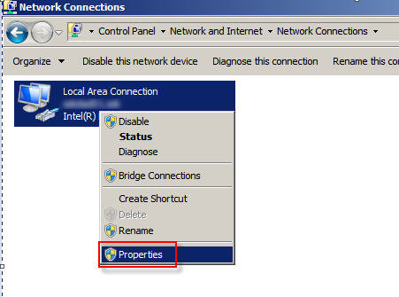
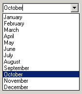
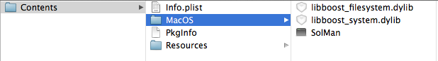
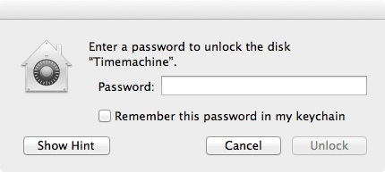
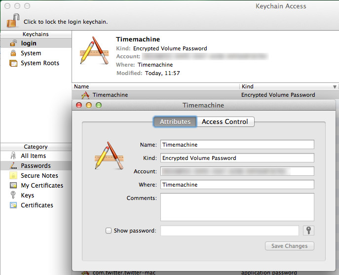
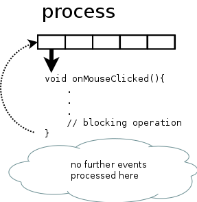

Yes, it's a blog.
Sometimes I feel the urgent need to compensate frustrating hours of coding, reading API documentation or cursing on artificial limits of a given platform from a sacrosanct manufacturer occupying a zombie staff with a paranoid personality disorder diagnosis.
Instead of telling it to the hand I'll come here and flip the bird on them (verbally).
Maybe.
Or maybe I'm just holding it wrong ;-)
The content was once served via Apache/PHP/textpattern, now it's simply created with mdBook.
Jumpy on Amiga
Jumpy is quite old, you know. Back in the year 1989 it began jumping around on the world famous Amiga. Now that name was blocked in the iTunes AppStore® so Jumpy got JumpyRally.

I had started Jumpy as a personal "science" project back in school. It served my well in learning assembler for the Motorola 68000. One lesson was "do not use hardcoded values". And there you go: it's the perfect name for this site.
I need space
There is this fruity company from Cupertino, giving a development environment to the people, called Xcode. It's free (as in free beer not as in free speech). It's buggy (sorry to say that - but it really is) and I often wonder if any of the people at Apple HQ ever tried to use it on a Macbook pro 13"?
As of today it is still buyable hardware on their store, so they should have tried it. What I am ranting about is this:

Now compare this to AppCode:

You get the difference, don't you?
Yes, I could use those buttons in the upper right corner to get more space in the editor. And ten seconds after that I may need the left or right pane again, move the mouse pointer all the way up and change it back. Then I need more space...
And for the clever ones mumbling something like keyboard shortcut: have you ever tried those on a German keyboard? Vulcans may like that, I do not!
No filesystem needed?
Although I like using my iPad, the invisible is one major drawback. Thanks to Rene Ritchie I know that I am not alone at last.
The average user doesn't know about filesystem details and perhaps doesn't want to know but if you try to use a device like an iPad in a productive or even professional manner, you will come to the point where a filesystem is needed.
On a PC or Mac it is not uncommon to work on one file (or call it chunk of data if you don't care that it is actually a file) with more than one application, maybe because each has that single feature that is needed to make progress. Yes, apps can exchange files on iOS but it's crippled and there is no way to be sure that one app can give one received file back. The cloud could be the solution for this but every App developer has to reinvent the wheel if he/she wants to support iCloud and/or Dropbox and/or ...
One place outside the App sandbox where every app can read/write would be fine and just like iOS prevents the starting of unknown (AKA unsigned) apps it could ensure that nothing can be ever executed from this filesystem.
Would this be the Überfilesystem? ;-)
One-way globalization

You sure did hear about globalization, it's affecting all of us whether you live in Europe, the U.S. or any other place of the world. Thousands of jobs were downsized in one part of the world to be replaced by cheaper workers in another country. Resources are transported and distributed in all parts of the world to create and produce a product in the most cost effective way. Lower the cost and raise the profit. Probably the device you are reading this on was not produced, not even assembled the country you live in. This works quite well as long you don't try to globalize for yourself.
It started some years ago with regional lockout. This way the provider of digital content are in control where you can consume and what price you got to pay (different markets offer different prices).
Well, isn't that nice?
Reducing the costs is just fine as a producer but is a major no-no for you as a customer.
Don't get me wrong - the creators of content must be paid. No doubt about that. And there are many people in this world who are willing to pay. Hello? There are people who want to spend their money. But they can't!
If you live in the wrong place of this world you got no chance to get that digital content. Here in Germany all TV shows are synchronized so they will be aired much later than in the U.S. (most TV shows are still produced there). But I want to see the original version with native speakers. I don't need the synchronized version and guess what: I do not even watch it! Yes, there are some (not so legal) ways to stream right from the US (be it iTunes, Netflix, Hulu or Amazon). Dear content providers: don't blame piracy if you reject peoples money. You could learn from them. Why should I go through all that hassle when torrent is so much easier? Shouldn't the legal way be the easy one?
ITIL burger anyone?
Currently my girlfriend and I are lying on the sofa after we had an accidential meal: spaghetti with salmon, spinach and onions. It didn't turn out as expected but was delicious after all. Yeah, that actually happens if you really cook for yourself. That reminded me of Big Macs vs. The Naked Chef. No, I would not call me a chef but the self created food is by far better than from Mc Donald's. Any fast-food chain like Mc Donald's has a pedantic set of rules and methodologies that ensure the same customer experience in any branch at any place in the world. It does not matter if you order your Bic Mac in New York, Rio or Tokyo. It will taste exactly the same. They call this quality which is newspeak for average food made by morons.
Suddenly it struck me that the same goes for ITIL (Information Technology Infrastructure Library).
"The Information Technology Infrastructure Library (ITIL), is a set of practices for IT service management (ITSM) that focuses on aligning IT services with the needs of business.[...]ITIL describes procedures, tasks and checklists that are not organization-specific, used by an organization for establishing a minimum level of competency."
Have you ever called a service line to get support for your computer or any other technical device? Those call center agents use a flow chart to classify your problem and hopefully direct you to a competent person that can solve it for you. But there are these (not so rare) moments where your problem does not fit in. They have no flow chart, no rule to follow and you can feel the blue screen of death that paralyses the lubricated service machine (metaphorically spoken). Eventually they will keep you in the "keep the customer busy" routine hoping that the problem solves itself or that you give up.
And companies that implemented ITIL have brought the rules to perfection even more if they follow(ed) the ITIL rules by the letter not considering if those rules apply to their business or the culture of their product/customers. Here we go again: there is a set of rules that guarantee a "high" level of quality of service (vide supra) brought to you by a bunch of stupid morons. ITIL is not a bad thing at all, don't get me wrong but it is often implemented by people who are somehow fixated on the process of implementing itself that they loose sight for the big picture.
Now if you buy service from an ITIL compliant company ask yourself if you really want the average? Is that what you pay for?
Find the button
Have you ever moved or copied a file on Windows 7?

There are four buttons in this dialog. Yes! 4! (Ignoring the X in the upper right corner)
Not knowing what was wrong with the old dialog I wonder why they throw away decades of UI design knowledge and present buttons that do not set apart from the background.
How to ask questions
Today I found this little pearl.
Back to the Mac
In the year 2010 Apple announced "Back to the Mac" and with OSX Lion came iCloud and some Apps in iOS Design. Calendar is one of them.
Despite liking the leather design or not, someone tell me please why they can't copy the full UI?

Why does the OSX version lack of the "select the month" bar?

Why is the "today" button on a completely different position?
If merging iOS and OSX Apps is the new paradigm, please be consistant at last.
Trust the cloud
Since one week I'm getting this at work:


Well, I hope my data is safe with Apple since it can not be accessed 8). Joking aside that just happens with Apple's (latest) Safari browser for Windows, Firefox works (and that is extraordinary, or should I say magic?).
They got too fast too big I fear.
Maybe the problem is caused by some Microsoft security updates - there was same trouble regarding certificates lately. But Apple should be aware of this if they build Software for the Windows platform.
Update
The problem is caused by the SSL gateway that is used in our company. That little thingy basically works like a man-in-the-middle attack and sniffs into the network traffic for viruses. Therefore it issues a new certificate that is sent to the browser. The browser will accept the new certificate because it was fed with the root certificate of the SSL gateway. Since this works fine with IE and Firefox I still think it a bug in Safari, because it doesn't even show the certificate path.
Change network adapter setting on Windows Server 2008 R2
How the hell did they come up with this?
click #1 & 2

click #3

click #4
cklick #5

click #6

click #7

tada
Oh, arrived finally.
Play with Qt
Today I've tried to play with Qt. And I had an uneasy sense of what would happen if I use the online setup program.
Hooray, hooray, it's a funny day. And yet another setup program that is not proxy aware...
On to pastures new
The image speaks for itself!
999 USD
Tonight Apple will present the next iteration of iPhone and iOS6 is about to come.
Will it bring wanted features? Yes!
Will it bring more pain to developers? Yes!
The latter is the reason that I will give up developing for iOS in the near future. Since I did this a hobby that's not a big loss for the fruit company and neither for me. It's my spare time and I don't need to fill it with pain. Maybe I will be paid in future to endure this pain then I will speak Objective-C again.
It was fun also and a big thank you goes out to all who bought QuickMinder and the little but impressive crew that made the beta testing. I've learned a lot on that way and that's what "coding just for fun" is all about.
What has that to do with USD 999?
Nothing.
Almost nothing.
I've decided to test if raising the price to the max for 1 day would cause any eruptions.
Like: would one really buy the app for this price? I doubt that. Will it raise a red flag somewhere? Will it put the app in front of the iTunes store? I don't know but I am curious :-)
Apple goes south
After a boring iPhone update and ugly iPods I decided to have a look into the iTunes Store: what's the current price for QuickMinder?
Expected were exorbitant USD 999.
I found: nothing, the app is gone from the store. iTunes Connect tells me everything is fine, no mail, nothing. Well, let's see what happens on the next morrow...
Changed it to USD 99.99 and it reappeared.
funny
not
20120921 - Apple and a..h.l.s

QuickMinder and iOS6, game over?
You've upgraded your iPod, iPhone or iPad to iOS6 and now the "Autosend" feature of QuickMinder doesn't work anymore?
Well, bad luck! Blame Apple and not me. For some obscure reasons they've raised the bar of "security" to a new level. But this time it isn't really about security, they don't want that the mail view in iOS can be used this way. This is not by accident, Apple invented bad user & developer treatment.
If you've bought QuickMinder, I am very thankful for that! But I am sorry to tell you, that Apple has made it impossible to reactivate this feature ever again! This is sad for you, because I think it was a very useful feature in QuickMinder and made life easier. It's sad for me (sad is not the right word, but more polite) and made me come to the only decision that is appropriate here: I will stop developing for iOS. In the end that doesn't hurt Apple and it doesn't hurt me.
Game over!
How Apple’s Obsession with Google Is Hurting Apple
Surprising frankly article on CultOfMac.
Useless features

In the last weeks there were some severe security breaches in the Java world. Most of them had in common that a Java applet was started using a browser on a prepared website. Personally I've switched of the use of Java applets on all machines/browsers, so I should be quite safe.
Today I've stumbled upon a feature in Firefox: click_to_play --- it's not so very hot and new as a little googleing showed.
This tiny little boolean controls whether Firefox starts plugins etc. while browsing the web.
So, I didn't know about this feature. Why? Because you have to dive into that longish about:config page that controls/shows the Firefox settings behind the scene. Behind the scene is all my today's rant is about: make it default AND make a checkbox somewhere on the security tab in the options/preferences. You'd be surprised: users could use that feature. And it's spelled USErs.
Daily UI hell
In our company we use Lotus Notes (yeah, pity me now). Not only is Lotus Notes an ugly email client it is also used for collaboration, which goes for me as far as using a calendar.
Now what do you think if you can see this? (just ignore the German names here for a little moment)

I don't know what you think but I think of a dropdown box. Using Windows since version 3.11 (and knowing since version 2) and many other graphical user interfaces some sort of conditioning took place. If I see that little downwards looking arrow on the right side, I am sure there is a dropdown box hiding.

And it would make perfectly sense here: you often need to change the month (quickly) and 12 months = 12 items that fit well in a dropdown box. That would even work on VGA standard resolution. Knowing and expecting that my eyes focus the area under the GUI element.
Then a click...
Bazinga!
I'm getting a tiny calendar.

The eyes start looking for orientation, perceive the current month on top of the box (that isn't even exactly under the previous GUI element. It partly hides it and is slightly shifted to the left), jump back to the calendar. Where are my months?
Cognition.

The arrows on the upper left and right are for flipping to the previous or next month. In my eyes this little task got already complicated for exactly that purpose: flipping to the previous or the next month.
But what if I want to skip several months?
click, clickedy, click, click.
Sorry folks, but what in the name of did the designers of Lotus Notes think here? And now think again about the German names for days and months. Oh, how can I express my deep love for this kind of software?
Old habits
With my iPad came the "need" for the iCloud and at this point I started using Apple's Safari browser. Being a "switcher" from Windows I was used to Internet Explorer and much more to Firefox. The latter was my browser of choice when I entered the universe of Jobs. But synchronizing the bookmarks between the iPad and my desktop computer made totally sense, so I gave Safari a try.
Nope, this is not about which browser is better or the best at all.
It's about some GUI detail that took me by surprise.
So this was Safari after all. Not so unusual, isn't it? Besides having the bookmarks on the desktop, too, it felt like it should. Hey it's a browser, not the holy grail. Until...
...I wanted to search something in Google. Simple enough, one could think. Yes, but...
...where is the textfield for the search term?
Where should I enter what I was looking for?
Lacking any alternative I entered the words in the URL bar and voilá I was in Google. And of course, it is so simple to differ betweens URLs and search terms, just using a regex.
What really struck me was the question "why on earth have so many browsers two textfields for that?" Because there work geniuses at Apple?
Well, have you seen Safari on IOS? These little devices with really small screen real estate? One should think that these are exactly the kind of devices that have born the idea of just using one textfield. And then they brought it "Back To The Mac".
Look for yourself:
Open with...
Today I was trying to compile a Qt test project with an external library and the issues kept on coming. Not bad for 4 lines of code...
But then I remembered being there before: maybe the wrong toolchain was set up for this project.
Yes, indeed: MinGW and not one of the Microsoft compilers. No problem, let's just change the settings and ... full brake. I can't select another (from the existing and configured) toolchain(s). What version of QtCreator did start up? 2.4.1! (There seems to be a bug but a new version is available so do not mind).
But why? I told Windows that I want the new version to open .pro files.
Ok, context menu again and...

Well, thank you Microsoft: I can choose between qtcreator.exe and qtcreator.exe. Which witch is which one? The right one (in my case) but why not show any details to the executable? There is not even a context menu, there is nothing.
Is it only me? Am I the only person experiencing all those quirks and bugs?
Quickminder (updated)
This software was sold in the Apple Appstore but is not available anymore
A thought, an idea, something you need to do crossed your mind: capture it quick, easy and fast with QuickMinder. Predefine up to four recipients for your thoughts and send them via email. It takes just two steps: Type your text in QuickMinder, push the button with your predefined recipient and the email will be sent. Set up once and you are good to go.
Features:
- universal app, runs on iPhone, iPod touch and iPad
- iPad: up to four recipients for your emails
- iPhone/iPod touch: up to two recipients for your emails
- look recipients in your address book
- uses the first line of text as a subject
- use a predefined subject
- turn off word correction if you like
- delete text automatically after you have sent your message if you like
- show keyboard directly after start, be quicker with writing
- runs in portrait and landscape mode
- sends mail using your mail account, mails come from you, no extra service needed
- insert current GPS coordinates if you like
- supports Retina Display
- supports creating and attaching photos
- supports TextExpander Touch

JumpyRally (updated)
This software was sold in the Apple Appstore but is not available anymore
JumpyRally is a retro style jump'no'run. You read that right! So take the challenge and help Jumpy to jump around, collect and rally all gold coins. But beware of those villains, they will exhaust your energy!
Jumpy is quite old, you know. Back in the year 1989 it began jumping around on the world famous Amiga. Now that name was blocked in the iTunes AppStore® so Jumpy got JumpyRally. This game is a little reminiscence of that golden homecomputer age. Programs were written in Assembler most of the time... And why is Jumpy collecting all that gold?
Look at him: he's from outerspace. Guess what, he needs money to get back 
Simply touch the left half of the screen to move left and vice versa: touch the right half of the screen to move right. Jumpy lives up to his name: he jumps up and down, that's how you get him through the maze.
Have a glimpse at the past.

NOTE: a missing vtable usually means the first non-inline virtual member function has no definition. Part 1
Currently I am trying to learn C++ and using the Qt framework. Every now and then the linker complains "NOTE: a missing vtable usually means the first non-inline virtual member function has no definition."
So far, so good.
I've googled what that means in detail and hunted down most of the bugs that caused this "message of horror". But right now I am sitting in front of a piece of code that is, well, correct. At least I can't see any errors and not why the linker complains. My fault for sure. Let's see where this journey ends.
Some articles gave a hint for a new run of the moc compiler to create the stuff that comes in your code with QObject. That sounded sane first, because I have added QObject to the class later during coding to use signals and slots. It was a pure C++ class first. On the other hand I have done the clean/run qmake routine some times now - just to be sure.
But curiosity led to me to have a closer look to the filesystem, since the moc compiler should create some files in the destination directory. It did. The mess was in the source directory: I had changed a class from .CPP to .MM because it got some Objective-C code. Well, QtCreator left the .CPP file where it was and made a new copy. Thus during compiling this file caused the trouble (what is somehow mysterious in itself: the .CPP file wasn't mentioned in the .PRO file).
Never totally trust your IDE ;-)
Ok, all is fine now...should be...added a signal and a slot and even after the clean/run qmake routine the message comes again.

But that's another story...!
NOTE: a missing vtable usually means the first non-inline virtual member function has no definition. Part 2
As mentioned in the last article I've added signals and slots to an existing class and ran into the linker error of a missing vtable. No old or bad files in the source directory this time.
But lack of a mod_nameofclass.cpp file in the build directory.
Why? I ran qmake all the time to make sure that the build systems knows about the class now using the Qt macro system. After a while I decided to move the header file from OBJECTIVE_HEADERS to HEADERS in the .PRO file. So far I chose OBJECTIVE_HEADERS because it is part of an Objective-C implementation file or to be more precise an Objective-C++ implementation.
Guess what? Clean project, run qmake and build. Voilá!
:-D
Need some Valgrind for OSX Lion?
Open you terminal and there you go.
First of all the autotools are missing (use newer versions if available).
export build=~/devtools # or wherever you'd like to build
mkdir -p $build
cd $build
curl -OL http://ftpmirror.gnu.org/autoconf/autoconf-2.68.tar.gz
tar xzf autoconf-2.68.tar.gz
cd autoconf-2.68
./configure --prefix=$build/autotools-bin
make
make install
export PATH=$PATH:$build/autotools-bin/bin
Next missing piece.
cd $build
curl -OL http://ftpmirror.gnu.org/automake/automake-1.11.tar.gz
tar xzf automake-1.11.tar.gz
cd automake-1.11
./configure --prefix=$build/autotools-bin
make
make install
Last missing piece.
cd $build
curl -OL http://ftpmirror.gnu.org/libtool/libtool-2.4.tar.gz
tar xzf libtool-2.4.tar.gz
cd libtool-2.4
./configure --prefix=$build/autotools-bin
make
make install
Last but not least download the latest Valgrind sources and compile them.
./autogen.sh
./configure --prefix=$build/valgrind-bin
make
export PATH=$PATH:$build/valgrind-bin/bin
Useless features, part 2
A while ago I wrote about useless features. Mozilla put the great "click to play" function into Firefox but forgot to tell the users about it. This feature is was really cool. When loading a webpage all plugins weren't loaded, just a placeholder. Improved security (can you say Flash?) and speed. On the other hand the user could start a specific plugin on demand.
After the last update Firefox brings up a popup on every page that has plugins.

If you choose "not now", you will see this popup every time you visit the page again. Yeah, a built-in nag screen, come on Mozilla hurt me plenty. If you choose "Never activate plugins for this site", you get what you want. Or not? Well, the site is loaded without any plugins, that's true. But what if I want to activate a specific one? No, no my friend, there is only all or nothing. If you want to change the setting, you must click on the blue brick that is shaped like a kids toy.
So there remains "Always activate plugins for this site". You want or must use a plugin for a site. Then you got no choice, you must activate it for the whole page. No more security, no more download speed.
And last but not least there are some sites with the old behavior, quite confusing.
Thank you Mozilla.
NOT!
Time to patch your Flash Player again
Well, it's time to apply the latest patch to the Adobe Flash Player. Besides being a pain in the neck (because it happens so often - I wonder if the suicide rate of enterprise admins correlates with that), it's no problem on the Mac. Go to preferences, start the Adobe Flash Player preferences pane, click "Advanced", click "Check Now". A web service is called or just an URL is checked - I don't know and I don't want to know - and you get the message that a new update is available. Then you are asked if you want to download and apply it.
Easy as pie.
Of course you can wait until the auto update mechanism tells you that there is an update.
Now look at the control panel from Windows:

What would you expect to happen if you click on "Check Now"? Same as above? Don't be so naive. A website opens and tells you the latest version for different operating systems. The rest is done with your bare hands, choose right version, download, start setup, yada yada yada.
CRAZY
Annoying addons
Time to update Java again, come and join the fun - NOT.
Not only that keeping Java up to date seems to be very time consuming lately but to uncheck this damned checkbox each and every time is annoying.
P.S.: Yes, I can smile :-) Don't think I am all about ranting.
iOS most wanted (updated)
Here is my own personal list of features I miss most in the Apple universe: just for the record, most of those items here were written while I was still on iOS 5.1
-
Date Why the heck don't you display the current date next to the time? Can't be that hard. Yes, there is a calendar app but that's not the point and it's not even 100 % sure that it shows the current day!
-
Store wishlists This one goes for every store there is so far: iTunes, Appstore. iTunes U is a separate app now, podcast will become with iOS 6 but under hood they still use iTunes - I guess. Sometimes there is something interesting to be found and you are not 100 % sure if you want to buy it. Or maybe in case of a movie you're missing the right company ;-)
Wouldn't it be nice to drop such items on a wishlist? Look at Amazon. They know the way. By the way: iTunes and Appstore are crap, Apple could learn so much from Amazon there. (It's so hard to find something in iTunes/Appstore even if you have a precise idea of what you are looking for)
Developers can't even change the keywords or category of an app once it's gone online :-/
-
Free trials Developing software is hard work and therefore it is no miracle that developers want to sell their software on the Appstore and not give it away for free. That is totally fine and they should get their money if they did a good job. But here is the problem: how to find out if they did a good job? On the Appstore it's first buy and then...maybe be happy or maybe suffer.
Often there are light versions for free to be found on the store but these versions are intentionally crippled. Developers must cripple them, they got no other choice. If those versions were feature complete, nobody would buy the "full" version even if the customer is satisfied - they are selfish humans in the end. But a crippled version doesn't necessarily show me how good the full version is.
Wouldn't it be nice if you could try the full version for - let's say - one week? If you don't like it, it simply should stop working after that period. If you decide to buy then - and only then - you can install it on another device. The user experience should be the same with every app and the user should not be able to bypass it - there you go, it must be implemented on OS level.
I think that would make both developers and customers very happy.
Have a look at this article from OSX Daily. I am not alone :-)
-
Filesystem Although I can somehow understand the approach Apple took in completely hiding the filesystem, I still want that feature! Nothing Windows 8 has shown so far makes me really happy or even want to change. But the access to the filesystem could make the difference! Update Have a look at Blackberry 10. They have sandboxed Apps and a way to share data via filesystem.
Apps like Files (article on 9to5mac) are not the solution as the developers have to follow (or is obey the better word?) the same restrictions
-
Keyboard navigation Writing on a touch device with only visual feedback is pain in itself. If you misspelled something and want to correct it, iOS gets nasty. Your only chance is tapping in the text field, wait 3 seconds and shift the magnifying glass. Oh there is another bug, tap again, wait 3 seconds, adjust the magnifier and so on and so on. Screen real estate is precious, but please: put at least cursor left/right on the keyboard.
-
Save as PDF Ever found a website and wanted to print it to a PDF? Me too! PDF support is built in iOS but as Apple decided that there is no need of a filesystem (I keep on repeating) they thought it would not be necessary to save a website content. Yes, I know the concept of bookmarks but the web changes as you may know. If any app that supports opening of PDFs could be targeted with the print output, such a file could be saved to Dropbox or any other cloudy kind of storage.
-
AirPlay Mirroring Yeah, there is some AirPlay Mirroring in iOS. But I want mirror any device to any other device, like iPod to iPad, my Mac to my iPad and any other combination that makes sense regarding screen resolution. How many OS generations shall we wait? Money for developers shouldn't be Apple's problem right now.
-
Easy data exchange Ever tried to paste the URL of a Youtube video (from the Youtube app) to Facebook? Did you ever try to attach a picture from inside the Mail app? (Or worse: data from another non-Apple-App)
Then you know what I am talking about.
-
SMS on iPad If you have an iPad with 3G network it would be nice to be able to send and receive SMS. It even works with cheap UMTS/WLAN modems, why not with the high prized iPad? And for those who say "use mail or messages": yeah, and what if I need to tweak my dataplan via SMS? There are countries in this world where they got unregistered prepaid SIM cards.
-
Close all recently used apps If you press the home button or swipe up with four fingers you get a list of the recently used apps. That's nice if there were only a few in this list but after a while it gets filled up and thus useless. What is a list good for that's more complicated to search in than restarting the app from the "desktop" icon? It ain't real multitasking: the most apps in background don't get a single cpu cycle. Please bring a button to close them all.
-
Improved bookmark editing With Safari on a Mac you can (like with any other browser) edit, sort and search your bookmarks using the complete screen real estate. No big problem if you only got a few, but I've got many of them, because Safari completes the URL for me if it's in the bookmarks.
BTW: why is it not possible to add/edit/use the stored bookmarks on the iCloud website?
-
PDF with index Yepp, iOS can show you a PDF file (and I haven't found one that can not be shown, but there will be sure files outside that can't), you can scroll up/down, pinch in/out just fine. But it lacks the capability of showing and using the index of the PDF (if it has one).
What a bummer!
-
Better WiFi Compared to my Macs the WiFi is sometimes bumpy and sluggish. Fix that, damn it! And while you are at it: I want to delete entries from "known networks".
-
Bluetooth Bluetooth, you are asking? but my i* has Bluetooth! Yes it has. But only for keyboards and headphones. Ever tried to exchange data with a non-Apple-device? Even more than ten year old phones can do that without problems. It simply works there :-/
-
Shuffle playlists "Wait a moment, my iTunes has a shuffle function" you say? Well, yes it does have something that is called shuffle but in my eyes that is the world's worst manifestation of such a thing. Yours truly associates shuffle with random playlists and sorry dear reader: the playlists on iTunes are in no random order at all (if shuffle is activated, of course). And before you mention it, yes I know there isn't such a thing as "chance" from a computerized random generator. So the art is in seeding that thing in such a way that it appears naturally to us humans. But that Apple shuffle algorithm prefers songs you have listened often to and therefore becomes a self-fulfilling prophecy. Songs played in shuffle mode are then preferred to be played in shuffle mode because they have been played more often (in shuffle mode). Hooray, but I want to hear a random selection of all my songs. Even with dynamic playlists and some clever rulesets you can't emulate that.
By the way and off topic: thanks to Apple you can't even see the order of the shuffled songs.
Do they even use that software to hear music?
If you still don't believe me: sync you iPod with you iTunes on your Mac. Start a shuffle play of some playlist on the computer for ten (or even hundred ) songs. Start a shuffle play on your iPod on the same playlist a week (!) or a month (!) later and you will hear exactly the same order of songs. Year, the blinded devotees will call that a feature...
-
Upgraded to 6.1.3
-
Sync iTunes U Wouldn't it be nice to have course subscriptions from the iPad to show up in iTunes on your Mac (and vice versa)?
Apple: a developers nightmare
This is exactly the reason why I quit iOS development. Not the iCloud per se, but the way Apple communicates with developers. They just do not.
To make that clear: iOS development was just a hobby and I don't want to spend time on a frustrating hobby. Being paid for it would be still frustrating but better somehow ;-)
Boost libraries on OSX - first contact
So here I am, still learning C++ and using the Qt framework. Recently I wanted to know how much disk space is left on a device, so that I can decide if an operation takes place at all.
Surprisingly there is nothing in the regular Qt framework. There seem to be some leftovers in a part of the mobile framework from the Nokia days. But those are not in the distribution that can be downloaded from the Qt project page.
After some research in the forum and our friend Mr. Google I stumbled over the Boost libraries (again - it wasn't for the first time). So I went over to their homepage and hit the
 button.
button.
Most parts of the boost libraries are header only, they need no compiling at all. Whut? Yes, they are a bunch of clever templates that do all the work for you. So, download, unzip and there you go (have a look in their getting started guide.
But I wanted something that works with the filesystem and is platform-independent. That's the part where some compiling comes into place. Part of the download was the Boost.Filesystem library. How to compile is described here.
So why is he writing all that stuff here if everything is documented on the Boost homepage? Well, that's kind of a self-therapy. By writing down the steps needed, I can memorize them better and if I need the information in future, I know where to find it. Beyond that it's written in my own language using my wording. Basically the same information but it goes faster into my brain. Last but not least there is the fact that you have understood it for yourself when you can tell others how to do it.
Open you terminal and there you go.
Make a directory where the Boost libraries go and put the downloaded file there
export build=~/devtools # or wherever you'd like to build
mkdir -p $build
cd $build
I could have put a fancy curl command here but since I wanted that get Boost button in here, I assume that you put the file in there with Finder.
tar -xzf boost_1_53_0.tar.gz
Go into the new boost_1_53_0 directory and for a first glance enter
./bootstrap.sh --help
`./bootstrap.sh' prepares Boost for building on a few kinds of systems.
Usage: ./bootstrap.sh [OPTION]...
Defaults for the options are specified in brackets.
Configuration:
-h, --help display this help and exit
--with-bjam=BJAM use existing Boost.Jam executable (bjam)
[automatically built]
--with-toolset=TOOLSET use specific Boost.Build toolset
[automatically detected]
--show-libraries show the set of libraries that require build
and installation steps (i.e., those libraries
that can be used with --with-libraries or
--without-libraries), then exit
--with-libraries=list build only a particular set of libraries,
describing using either a comma-separated list of
library names or "all"
[all]
--without-libraries=list build all libraries except the ones listed []
--with-icu enable Unicode/ICU support in Regex
[automatically detected]
--without-icu disable Unicode/ICU support in Regex
--with-icu=DIR specify the root of the ICU library installation
and enable Unicode/ICU support in Regex
[automatically detected]
--with-python=PYTHON specify the Python executable [python]
--with-python-root=DIR specify the root of the Python installation
[automatically detected]
--with-python-version=X.Y specify the Python version as X.Y
[automatically detected]
Installation directories:
--prefix=PREFIX install Boost into the given PREFIX
[/usr/local]
--exec-prefix=EPREFIX install Boost binaries into the given EPREFIX
[PREFIX]
More precise control over installation directories:
--libdir=DIR install libraries here [EPREFIX/lib]
--includedir=DIR install headers here [PREFIX/include]
Ok, the option --show-libraries will tell us, what is in stock here.
./bootstrap.sh --show-libraries
-n Building Boost.Build engine with toolset darwin...
tools/build/v2/engine/bin.macosxx86_64/b2
The following Boost libraries have portions that require a separate build
and installation step. Any library not listed here can be used by including
the headers only.
The Boost libraries requiring separate building and installation are:
- atomic
- chrono
- context
- date_time
- exception
- filesystem
- graph
- graph_parallel
- iostreams
- locale
- math
- mpi
- program_options
- python
- random
- regex
- serialization
- signals
- system
- test
- thread
- timer
- wave
OK, we wanted something for the filesystem and surprise, surprise: it's called filesystem.
The option --with-libraries tells that bootstrap script which library to build (if not all and I just want that file thingy). On top of that we can use --prefix to tell where the build library goes in our filesystem. Long story short:
./bootstrap.sh --prefix=$build/boost_1_53_0/filesystem --with-libraries=filesystem
-n Building Boost.Build engine with toolset darwin...
tools/build/v2/engine/bin.macosxx86_64/b2
-n Unicode/ICU support for Boost.Regex?...
not found.
Generating Boost.Build configuration in project-config.jam...
Bootstrapping is done. To build, run:
./b2
To adjust configuration, edit 'project-config.jam'.
Further information:
- Command line help:
./b2 --help
- Getting started guide:
http://www.boost.org/more/getting_started/unix-variants.html
- Boost.Build documentation:
http://www.boost.org/boost-build2/doc/html/index.html
We will se if the "Unicode/ICU support for Boost.Regex?... not found." message means anything. Enter
./b2
Building the Boost C++ Libraries.
Component configuration:
- atomic : not building
- chrono : not building
- context : not building
- date_time : not building
- exception : not building
- filesystem : building
- graph : not building
- graph_parallel : not building
- iostreams : not building
- locale : not building
- math : not building
- mpi : not building
- program_options : not building
- python : not building
- random : not building
- regex : not building
- serialization : not building
- signals : not building
- system : not building
- test : not building
- thread : not building
- timer : not building
- wave : not building
...patience...
...found 507 targets...
...updating 46 targets...
common.mkdir stage
common.mkdir stage/lib
common.mkdir bin.v2
common.mkdir bin.v2/libs
common.mkdir bin.v2/libs/system
common.mkdir bin.v2/libs/system/build
common.mkdir bin.v2/libs/system/build/darwin-4.2.1
common.mkdir bin.v2/libs/system/build/darwin-4.2.1/release
common.mkdir bin.v2/libs/system/build/darwin-4.2.1/release/threading-multi
darwin.compile.c++ bin.v2/libs/system/build/darwin-4.2.1/release/threading-multi/error_code.o
darwin.link.dll bin.v2/libs/system/build/darwin-4.2.1/release/threading-multi/libboost_system.dylib
common.copy stage/lib/libboost_system.dylib
common.mkdir bin.v2/libs/filesystem
common.mkdir bin.v2/libs/filesystem/build
common.mkdir bin.v2/libs/filesystem/build/darwin-4.2.1
common.mkdir bin.v2/libs/filesystem/build/darwin-4.2.1/release
common.mkdir bin.v2/libs/filesystem/build/darwin-4.2.1/release/threading-multi
darwin.compile.c++ bin.v2/libs/filesystem/build/darwin-4.2.1/release/threading-multi/codecvt_error_category.o
darwin.compile.c++ bin.v2/libs/filesystem/build/darwin-4.2.1/release/threading-multi/operations.o
darwin.compile.c++ bin.v2/libs/filesystem/build/darwin-4.2.1/release/threading-multi/path.o
darwin.compile.c++ bin.v2/libs/filesystem/build/darwin-4.2.1/release/threading-multi/path_traits.o
darwin.compile.c++ bin.v2/libs/filesystem/build/darwin-4.2.1/release/threading-multi/portability.o
darwin.compile.c++ bin.v2/libs/filesystem/build/darwin-4.2.1/release/threading-multi/unique_path.o
darwin.compile.c++ bin.v2/libs/filesystem/build/darwin-4.2.1/release/threading-multi/utf8_codecvt_facet.o
darwin.compile.c++ bin.v2/libs/filesystem/build/darwin-4.2.1/release/threading-multi/windows_file_codecvt.o
darwin.link.dll bin.v2/libs/filesystem/build/darwin-4.2.1/release/threading-multi/libboost_filesystem.dylib
common.copy stage/lib/libboost_filesystem.dylib
common.mkdir bin.v2/libs/system/build/darwin-4.2.1/release/link-static
common.mkdir bin.v2/libs/system/build/darwin-4.2.1/release/link-static/threading-multi
darwin.compile.c++ bin.v2/libs/system/build/darwin-4.2.1/release/link-static/threading-multi/error_code.o
darwin.archive bin.v2/libs/system/build/darwin-4.2.1/release/link-static/threading-multi/libboost_system.a
common.copy stage/lib/libboost_system.a
common.mkdir bin.v2/libs/filesystem/build/darwin-4.2.1/release/link-static
common.mkdir bin.v2/libs/filesystem/build/darwin-4.2.1/release/link-static/threading-multi
darwin.compile.c++ bin.v2/libs/filesystem/build/darwin-4.2.1/release/link-static/threading-multi/codecvt_error_category.o
darwin.compile.c++ bin.v2/libs/filesystem/build/darwin-4.2.1/release/link-static/threading-multi/operations.o
darwin.compile.c++ bin.v2/libs/filesystem/build/darwin-4.2.1/release/link-static/threading-multi/path.o
darwin.compile.c++ bin.v2/libs/filesystem/build/darwin-4.2.1/release/link-static/threading-multi/path_traits.o
darwin.compile.c++ bin.v2/libs/filesystem/build/darwin-4.2.1/release/link-static/threading-multi/portability.o
darwin.compile.c++ bin.v2/libs/filesystem/build/darwin-4.2.1/release/link-static/threading-multi/unique_path.o
darwin.compile.c++ bin.v2/libs/filesystem/build/darwin-4.2.1/release/link-static/threading-multi/utf8_codecvt_facet.o
darwin.compile.c++ bin.v2/libs/filesystem/build/darwin-4.2.1/release/link-static/threading-multi/windows_file_codecvt.o
darwin.archive bin.v2/libs/filesystem/build/darwin-4.2.1/release/link-static/threading-multi/libboost_filesystem.a
/usr/bin/libtool: file: bin.v2/libs/filesystem/build/darwin-4.2.1/release/link-static/threading-multi/windows_file_codecvt.o has no symbols
common.copy stage/lib/libboost_filesystem.a
...updated 46 targets...
The Boost C++ Libraries were successfully built!
The following directory should be added to compiler include paths:
/Users/sven/devtools/boost_1_53_0
The following directory should be added to linker library paths:
/Users/sven/devtools/boost_1_53_0/stage/lib
Yes, there you go: it reads The Boost C++ Libraries were successfully built! :-) And there is also the most important hint:
The following directory should be added to linker library paths: /Users/sven/devtools/boost_1_53_0/stage/lib
That is nice! I like it when toolsets are that easy to build and use. One step left. I want to use it with Qt/QtCreator, so add that information to the .PRO file
LIBS += /Users/sven/devtools/boost_1_53_0/stage/lib -lboost_filesystem -lboost_system
INCLUDEPATH += /Users/sven/devtools/boost_1_53_0
One could think that
LIBS += /Users/sven/devtools/boost_1_53_0/stage/lib
INCLUDEPATH += /Users/sven/devtools/boost_1_53_0
is enough, but the compiler complains here (hey, I am still a C++ novice).
Of course you should use your own path here. That was easy and fast. What are you waiting for? Do it for yourself.
Boost libraries on OSX - first obstacles
Building the boost/filesystem library was quite easy, using it in a program not so much. It compiled fine but when I started I got
dyld: Library not loaded: libboost_filesystem.dylib
Referenced from: ___path_to_the_program_I_started___
Reason: image not found
It's a dynamic library, which means that I must take care of the application bundle on OSX. When I transfer the application to another Mac that has - certainly - not its own copy of the libraries. But on my own computer?
Let's have a look. Walked in the directory with the .dylib file.
otool -L ./libboost_filesystem.dylib
./libboost_filesystem.dylib:
libboost_filesystem.dylib (compatibility version 0.0.0, current version 0.0.0)
libboost_system.dylib (compatibility version 0.0.0, current version 0.0.0)
/usr/lib/libstdc++.6.dylib (compatibility version 7.0.0, current version 52.0.0)
/usr/lib/libSystem.B.dylib (compatibility version 1.0.0, current version 159.1.0)
Looks not so bad, there is no absolute path to /usr/somewhere in the library file. But hat also means that the system can not find the library while starting the program. And that brings me back to the "copy them to your application bundle" problem.
No absolute path is not perfect in the OSX world, there is a need for a @executable_path/../Frameworks path in the library. So a compiled program will look in the Frameworks folder, relative from its own position.
Do I really need to recompile the Boost libraries or can I tell QtCreator to do the job for me? In the Qt helpfiles is a chapter called Qt for Mac OS X - Specific Issues where it reads
If you want to use some dynamic libraries in your Mac OS X application bundle (the application directory), create a subdirectory named "Frameworks" in the application bundle directory and place your dynamic libraries there. The application will find a dynamic library if it has the install name
@executable_path/../Frameworks/libname.dylib(that goes for both, the program binary and the library). If you use qmake and Makefiles, use the QMAKE_LFLAGS_SONAME setting:
MAKE_LFLAGS_SONAME = -Wl,-install_name,@executable_path/../Frameworks/
A quick lookup in the qmake Variable Reference is not very enlightening:
This variable specifies the link flags to set the name of shared objects, such as .so or .dll. The value of this variable is typically handled by qmake or qmake.conf and rarely needs to be modified.
The Qt project claims to have a good documentation. Well, I beg to differ. So far every time the tiny bits are missing when it goes into the important details that everyone will come across on the OSX platform or using Qt in general. If you are experienced in using compilers that question may never come up, but for a C++ novice like me it is fundamental. I don't know if the qmake variable is simply a placeholder for a compiler setting. And if it is, I'd like to know that it is that way and where to look for the meaning of it.
Lazy solution
Removing the *.dylib files from the boost_1_53_0/stage/lib directory forces the linker to use the *.a files and that results in static linking. Easy way out but not a perfect solution. There are libraries that can't be used with static linking and be it just for licensing reasons. This article from qt.project.org goes into some of the details. Using the The Mac Deployment Tool will be covered in another post.
Pimp the clean process in QtCreator
Every now and then you clean your project. What bugged my for some time using QtCreator was that it left the Makefile and the *.app directory containing the (Mac) OSX App(lication).
No problem, just add a Custom Process Step.
Handling the program version with Qt, part 1
Usually your program has a version number (e.g. like 1.2.3) and you want to work with that number inside your program without changing that number in more than one file.
With Qt you configure your program with .PRO files which are a recipe for qmake the meta compiler that adds the Qt magic to your code. Both understand a variable called VERSION, that's the sunny part. On the dark side is the handling of it. At least on OSX there is none :-/
But it's quite easy to sneak a peak on that number from inside your program. While we are at it, we also add the git hash. Just add
VERSION = 1.2.3
macx:HC_GITHASH = $$system(git show HEAD|grep "^commit"|cut -c 8-)
# define c style macros to access the following values from inside the program
DEFINES += HC_PROGRAMVERSION=\\\"$$VERSION\\\"
DEFINES += HC_GITHASH=\\\"$$HC_GITHASH\\\"
to your .PRO file and that will result into two #define statements, or C-style macros in other words. Not perfect, because the compiler can't do type checking. On the other hand you're the boss and can handle those two values responsibly.
One question remains: how do we get this number into the application bundle (still talking OSX here), so that the user can right click (or CTRL-click) with the Finder and chose get info?.
Handling the program version with Qt, part 2
If you code with Qt and write a GUI application on your Mac (OSX), you will probably add a TEMPLATE = app statement to your .PRO file. This will tell qmake to create an application bundle (BTW, I love the concept of application bundles) Oh, isn't that nice? If I add the VERSION variable to my .PRO file than it will be added automatically, right?
Nope!
Would have been too easy.
After reading the qmake Variable Reference you may think that QMAKE_INFO_PLIST is your friend (just ignore the awkward humor in Note: Most of the time, the default Info.plist is good enough.). It is, if there wasn't a tiny little bug. Oh, and while we are at bugs, @SHORT_VERSION@ is replaced by the first two digits of the program version only (1.2.3 will be 1.2). Ah, the application icon will not be copied, if you use QMAKE_INFO_PLIST, but that was already clear, wasn't it?
So, with
# copy our info.plist template and replace variables, see qmake Variable Reference
QMAKE_INFO_PLIST = $$PWD/osx/info.plist
# see https://bugreports.qt-project.org/browse/QTBUG-21267
QMAKE_INFO_PLIST_OUT = $${TARGET}.app/Contents/Info.plist
PRE_TARGETDEPS += $${TARGET}.app/Contents/Info.plist
you will get your own info.plist file copied into the bundle.
Now just add
HC_ICONNAME = name_of_a_beautiful_icon.icns
# does not work, so maybe redundant
ICON = $$PWD/Icons/$${HC_ICONNAME}
# write some extra info in the info.plist
QMAKE_POST_LINK += /usr/libexec/PlistBuddy -c \"Set :GIT_COMMIT_HASH $${HC_GITHASH}\" $${OUT_PWD}/$${TARGET}.app/Contents/Info.plist
# @SHORT_VERSION@ is replaced by the first 2 digits of the version number only. No @TEMPLATE@ for full version available
QMAKE_POST_LINK += ;/usr/libexec/PlistBuddy -c \"Set :CFBundleShortVersionString $${VERSION}\" $${OUT_PWD}/$${TARGET}.app/Contents/Info.plist
# if QMAKE_INFO_PLIST is assigned, the icon is not copied
QMAKE_POST_LINK += ;cp -n $$PWD/Icons/$${HC_ICONNAME} $${OUT_PWD}/$${TARGET}.app/Contents/Resources/.
to your .PRO file and the git hash (you use git, don't you?) is also placed into the info.plist file. Be careful, PlistBuddy is picky and awaits the attribute GIT_COMMIT_HASH in your template info.plist. The program version is added to your bundle, see CFBundleShortVersionString. And finally, the icon is copied.
Didn't I have something better to do on a sunday? Yep, the rest of the sunny afternoon was quality time spent with the family and BBQ!
Did I mention BBQ?
Boost libraries on OSX - obstacles almost gone
A few days ago I wrote about first obstacles on using the Boost library in a Qt program. To be more specific, the dynamic libraries were not found from the executable. With a fairly crude hack I convinced the linker to just use the static ones. Problem solved.
Not really.
Basically it's "where to find the libraries?". If you just would place the compiled Boost libraries in the same directory as the executable it would work just fine.
Let's have a look at a binary, I chose SolMan here, my very first Qt project. It's kind of a code lab: a place to learn C++ and about the Qt framework. Never mind, we are talking libraries here:
sylimikro:~ sven$ otool -L SolMan.app/Contents/MacOS/SolMan
/SolMan.app/Contents/MacOS/:
/System/Library/Frameworks/ScriptingBridge.framework/Versions/A/ScriptingBridge (compatibility version 1.0.0, current version 1.0.0)
/System/Library/Frameworks/AppKit.framework/Versions/C/AppKit (compatibility version 45.0.0, current version 1138.51.0)
/Users/sven/devtools/taglib-bin/lib/libtag.1.dylib (compatibility version 1.0.0, current version 1.12.0)
libboost_filesystem.dylib (compatibility version 0.0.0, current version 0.0.0)
libboost_system.dylib (compatibility version 0.0.0, current version 0.0.0)
QtGui.framework/Versions/4/QtGui (compatibility version 4.8.0, current version 4.8.4)
QtCore.framework/Versions/4/QtCore (compatibility version 4.8.0, current version 4.8.4)
/usr/lib/libstdc++.6.dylib (compatibility version 7.0.0, current version 52.0.0)
/usr/lib/libgcc_s.1.dylib (compatibility version 1.0.0, current version 1094.0.0)
/usr/lib/libSystem.B.dylib (compatibility version 1.0.0, current version 159.1.0)
/System/Library/Frameworks/CoreFoundation.framework/Versions/A/CoreFoundation (compatibility version 150.0.0, current version 635.21.0)
/System/Library/Frameworks/Foundation.framework/Versions/C/Foundation (compatibility version 300.0.0, current version 833.25.0)
/usr/lib/libobjc.A.dylib (compatibility version 1.0.0, current version 228.0.0)
This tells us, that some libraries are looked for at well defined paths, e.g. /usr/lib/libobjc.A.dylib. This is no problem because that library is just at exactly that place on any Mac system (Ok, let's say >= OSX 10.6, don't know older versions) out there. So looking out for the library in /usr/lib/ will work just fine. But something like the Boost libraries is not on every Mac. Have a close look at those two lines here:
libboost_filesystem.dylib (compatibility version 0.0.0, current version 0.0.0)
libboost_system.dylib (compatibility version 0.0.0, current version 0.0.0)
There is not path in here. No path could mean same path, let's try that one. Just copy the two library files to the same directory as the executable.

Start the program and - ah - it works. Ok, problem solved. Again.
Nope
Dynamic libraries simply don't belong there on a Mac, have a look at the Apple - Bundle Programming Guide or at Qt - Deploying an Application on Mac OS X if you prefer a more visual approach.
But if you just create that Framworks directory and put the library files there, your program can not start anymore. The libraries will not be found - again.
Ok, now we will try to change the information where the dynamic loader looks for the library.
install_name_tool -change "libboost_filesystem.dylib" "@executable_path/../Frameworks/libboost_filesystem.dylib" SolMan.app/Contents/MacOS/SolMan
install_name_tool -change "libboost_system.dylib" "@executable_path/../Frameworks/libboost_system.dylib" SolMan.app/Contents/MacOS/SolMan
Interesting enough, starting the app now results in a new error message:
sylimikro:~ sven$ /Users/sven/Documents/QtProjects/SolMan-build-Desktop-Debug/SolMan.app/Contents/MacOS/SolMan ; exit;
dyld: Library not loaded: libboost_system.dylib
Referenced from: /Users/sven/Documents/QtProjects/SolMan-build-Desktop-Debug/SolMan.app/Contents/MacOS/../Frameworks/libboost_filesystem.dylib
Reason: image not found
Trace/BPT trap: 5
logout
[Process completed]
Hm...looks like he found the first library but can't find the second one that depends from the first. I guess you notice that I am trying a lot of things here with no fundamental knowledge of how it should be. That is exactly the problem: there are so many articles and blogs about the solution of this problem that are contradictory, exclude each other or just do not tell the whole truth. After I have discovered what seems to be the right way to handle this, I will try to find evidence that my conclusion is right.
Our binary would know where to look for the second dependent library. But it seems that the dynamic loader does his job recursively and the way from libboost_filesystem.dylib to libboost_system.dylib seems not to be clear.
Let's manipulate the entry in libboost_filesystem.dylib.
install_name_tool -change "libboost_system.dylib" "@executable_path/../Frameworks/libboost_system.dylib" SolMan.app/Contents/Frameworks/libboost_filesystem.dylib
Run the application...heureka!
Many blogs talked about changing even the name/path of the library itself. This seems to be obsolete. Nevertheless I am gonna try what happens if we also change this value:
install_name_tool -id "@executable_path/../Frameworks/libboost_filesystem.dylib" SolMan.app/Contents/Frameworks/libboost_filesystem.dylib
Note that we must use another switch for the install_name_tool command. This is still working and more consistant in my eyes. Maybe we could even change the ID in the dependent library:
install_name_tool -id "@executable_path/../Frameworks/libboost_system.dylib" SolMan.app/Contents/Frameworks/libboost_system.dylib
Even that works. Is this the right way to go? What is an @rpath? and what's the difference to @executable_path? Apple can enlighten us here :
A run-path dependent library is a dependent library whose complete install name is not known when the library is created (see “How Dynamic Libraries Are Used”). Instead, the library specifies that the dynamic loader must resolve the library’s install name when it loads the executable that depends on the library.
That's not what we need, @rpath is out.
This here is a good explanation and a hint that I am not totally wrong.
BUT
Here they say
Library-relative location. To specify a file path relative to the location of the library itself, place the @loader_path macro at the beginning of the pathname. Library-relative location allows you to locate library resources within a directory hierarchy regardless of where the main executable is located.
Oops. Next try...
install_name_tool -change "@executable_path/../Frameworks/libboost_system.dylib" "@loader_path/libboost_system.dylib" SolMan.app/Contents/Frameworks/libboost_filesystem.dylib
This works, too! And this is finally the most promising version of handling the paths of executable and it's dynamic libraries.
Now we know where the bits and pieces have to go. In one of the next blogs I will try to make this a more consistent and automated process.
Using the Boost libraries with QtCreator on OSX
Now that we know where the libraries have to go and how the executable and each library must be prepared, so that everything works together. The problem is here that I certainly don't want to do those necessary steps by hand. On the other hand I ask myself if there is really a need to change the information in the libraries itself? How to put all that together in the application bundle in a way that works smooth with QtCreator?
First thing I will try is linking the application in way that the path information AKA @executable_path/../Frameworks is already in the binary, so that I don't need to fiddle around with install_name_tool after each new compile/link process. Last time I saw
QMAKE_LFLAGS_SONAME = -Wl,-install_name,@executable_path/../Frameworks/
I didn't know what that was all about. All compiled code pieces are glued together from the linker, hence this could be a linker option. I read the qmake Variable Reference again
This variable specifies the link flags to set the name of shared objects, such as .so or .dll. The value of this variable is typically handled by qmake or qmake.conf and rarely needs to be modified.
This time I didn't miss it. Link is the hint. Let's look in the man page of ld (the linker).
-install_name name
Sets an internal "install path" (LC_ID_DYLIB) in a dynamic library. Any clients linked
against the library will record that path as the way dyld should locate this library. If
this option is not specified, then the -o path will be used. This option is also called
-dylib_install_name for compatibility.
No talking about -Wl in the man page. Maybe that goes for other linkers and/or other operating systems. (Update: in the meanwhile I've learned that this is a compiler flag for linker options)
I've decided to add
QMAKE_LFLAGS_SONAME = -install_name,@executable_path/../Frameworks/
and ran qmake and look into the produced Makefile.
First thing I notice is
LFLAGS = -headerpad_max_install_names -arch x86_64 -Xarch_x86_64 -mmacosx-version-min=10.5
-headerpad_max_install_names is used, that way everything is compiled with enough space in the files to change the path information with install_name_tool afterwards.
Here is the call of the linker:
$(LINK) $(LFLAGS) -o $(TARGET) $(OBJECTS) $(OBJCOMP) $(LIBS)
Apparently there is no way to get the QMAKE_LFLAGS_SONAME variable working. Maybe I am doing it wrong or it is just a bug. That's something I'm going to ask the Qt-Project soon.
For every library with a valid install_name you can use macdeployqt. It does all the needed steps.
QMAKE_POST_LINK += ;/Developer/Tools/Qt/macdeployqt $${OUT_PWD}/$${TARGET}.app -no-strip
On the positive side is the (intentional) handling of all dependent libraries, that means every library our new executable depends on is copied to the Frameworks directory and the install_name is corrected in the library and in the executable. That includes the Qt libraries, this way the application bundle can be transferred to another Mac without having Qt installed. Perfect!
But it also stumbles on an invalid install_name, so we have to prepend some stuff to copy the prepared boost libraries and do the adjustments with the install_name.
QMAKE_POST_LINK += ;cp -n $${PWD}/osx/libboost_filesystem.dylib $${OUT_PWD}/$${TARGET}.app/Contents/Frameworks/
QMAKE_POST_LINK += ;cp -n $${PWD}/osx/libboost_system.dylib $${OUT_PWD}/$${TARGET}.app/Contents/Frameworks/
QMAKE_POST_LINK += ;/usr/bin/install_name_tool -change \"libboost_filesystem.dylib\" \"@executable_path/../Frameworks/libboost_filesystem.dylib\" $${OUT_PWD}/$${TARGET}.app/Contents/MacOS/$${TARGET}
QMAKE_POST_LINK += ;/usr/bin/install_name_tool -change \"libboost_system.dylib\" \"@executable_path/../Frameworks/libboost_system.dylib\" $${OUT_PWD}/$${TARGET}.app/Contents/MacOS/$${TARGET}
In retrospective it seems easier to put change the install_name of the Boost libraries and also use the macdeployqt tool. Perfect would be a way to compile the Boost libraries in a way that doesn't need any work afterwards. Future will tell...
Boost libraries and QtCreator on OSX - all together now
After first contact with the Boost libraries I faced first obstacles, sorted them out and tried to use them with QtCreator. Upon subsequent reading some mails and forum entries this problem is not uncommon, but nobody provided a solution. So I used this journey to figure it out on my own.
Here is a follow up with the concentrated insight.
- prepare the build process (this time all libraries)
export build=~/devtools # or wherever you'd like to build
cd $build/boost_1_53_0
# remove traces from the last time
./b2 --clean-all
rm project-config.jam*
# prepare
./bootstrap.sh
#output
-n Building Boost.Build engine with toolset darwin...
tools/build/v2/engine/bin.macosxx86_64/b2
-n Detecting Python version...
2.7
-n Detecting Python root...
/System/Library/Frameworks/Python.framework/Versions/2.7
-n Unicode/ICU support for Boost.Regex?...
not found.
Generating Boost.Build configuration in project-config.jam...
Bootstrapping is done. To build, run:
./b2
To adjust configuration, edit 'project-config.jam'.
Further information:
- Command line help:
./b2 --help
- Getting started guide:
http://www.boost.org/more/getting_started/unix-variants.html
- Boost.Build documentation:
http://www.boost.org/boost-build2/doc/html/index.html
- build
./b2
#output
Building the Boost C++ Libraries.
Performing configuration checks
- 32-bit : no
- 64-bit : yes
- x86 : yes
- has_icu builds : no
warning: Graph library does not contain MPI-based parallel components.
note: to enable them, add "using mpi ;" to your user-config.jam
- iconv (libc) : no
- iconv (separate) : yes
- icu : no
- icu (lib64) : no
- gcc visibility : yes
- long double support : yes
warning: skipping optional Message Passing Interface (MPI) library.
note: to enable MPI support, add "using mpi ;" to user-config.jam.
note: to suppress this message, pass "--without-mpi" to bjam.
note: otherwise, you can safely ignore this message.
Component configuration:
- atomic : building
- chrono : building
- context : building
- date_time : building
- exception : building
- filesystem : building
- graph : building
- graph_parallel : building
- iostreams : building
- locale : building
- math : building
- mpi : building
- program_options : building
- python : building
- random : building
- regex : building
- serialization : building
- signals : building
- system : building
- test : building
- thread : building
- timer : building
- wave : building
# many, many lines of comments
# felt like 5 minutes compile time
...updated 748 targets...
The Boost C++ Libraries were successfully built!
The following directory should be added to compiler include paths:
/Users/sven/devtools/boost_1_53_0
The following directory should be added to linker library paths:
/Users/sven/devtools/boost_1_53_0/stage/lib
- Change the
install_namein all libraries
cd $build/boost_1_53_0/stage/lib
for DYNLIB in $(ls libboost*.dylib);do install_name_tool -id "$(pwd)/${DYNLIB}" "$(pwd)/${DYNLIB}";done
for OUTER in $(ls libboost*.dylib);do for INNER in $(ls libboost*.dylib);do install_name_tool -change "${INNER}" "@loader_path/${INNER}" ${OUTER};done;done
- check one of them
otool -L $build/boost_1_53_0/stage/lib/libboost_filesystem.dylib /Users/sven/devtools/boost_1_53_0/stage/lib/libboost_filesystem.dylib:
/Users/sven/devtools/boost_1_53_0/stage/lib/libboost_filesystem.dylib (compatibility version 0.0.0, current version 0.0.0)
@loader_path/libboost_system.dylib (compatibility version 0.0.0, current version 0.0.0)
/usr/lib/libstdc++.6.dylib (compatibility version 7.0.0, current version 52.0.0)
/usr/lib/libSystem.B.dylib (compatibility version 1.0.0, current version 159.1.0)
- configure usage in
.PROfile of QtCreator
QMAKE_POST_LINK += ;/Developer/Tools/Qt/macdeployqt $${OUT_PWD}/$${TARGET}.app -no-strip
Done :-)
Welcome aboard sailor!
Today is the day: #JollaLoveDay
Jolla mobile will unveil its first device today. Go to their website, look at the first pictures and throw your money at them!

What shall I say? I've just pre-ordered:

Why I believe in Jolla

It was last year during the summer holidays that I've read about Jolla. My girlfriend and I stayed in a mökki (=cottage) almost 40km away from Tampere - Finland. The only hi-tech gizmo we took to that place, was an iPad. Quite useful to checkout where the next stores are and it saves your holiday, because the iPad is a pure consumer product only: you are safe from doing anything productive (pun intended).
BTW: if you ever wondered how they calculate battery duration times for mobile phones, they test that in Finland - wherever you go, you got prefect reception. OK, I am exaggerating here but compared to the mobile networks in Germany it is paradise. Watching Youtube videos in full scale the whole day here in Germany? Impossible!
And there was some news about some ex-Nokia employees that wanted to continue their vision of a Linux based and open phone/OS. I quickly read all that could be found in the internet those days - and that was not very much back then.
Just before the holidays I tested my two Applications in the Apple App Store with the beta version of iOS6 and well, knew that this would become a road to nowhere pretty soon.
I was very unhappy about the way a company like Apple communicates with customers and developers (if at all), that I was forced to pay money each and every year just to write and run some software on my own device. Don't get me wrong, there were positive trade offs here: I learned a lot about interface design that influences my work until now: even on Desktops your interfaces improve if you ever experienced the limitations of a pocket touch device.
Developing for Android phones could have been an alternative but I dislike the upgrade situation. You can't be sure to get the next version of the Android OS for your phone. And I am certainly not the guy that buys a new phone every year. (Update: FirefoxOS is in my eyes a wrong approach. Why use a resource hungry browser for a low energy device?)
So there they were: a pack of misfits that promised exactly what I wanted: a touch based phone with a free and open OS and a fluent UI. They came from Nokia and therefore had the knowledge to get the job done. The N9 was proof of that. Sadly the N9 was a dead product from day one, since Stephen Elop burned the platform.
The OS would have an UI based on Qt or QML to be more precise. I've had heard a lot about Qt but never used it before. Frustrated by the limitations of one manufacture/platform, it seemed reasonable to dig a bit deeper.
How hard would it be to learn C++ and make the first steps with the Qt framework?
I watched a lot of videos and tutorials during that holiday and after we came back I decided "on to pastures new".
From there on I soaked up every news about Jolla and started learning C++/Qt. The latter two turned out to be a bit harder than expected but that will be explained in another blog post sometime.
Jump to may, 20th 2013 and beyond.
Short after #JollaLoveDay some critical opinions came up, one of them is here. First of all: that one was retweeted by Jolla, so no brushing under the carpet going on here. I give kudos to Jolla for that. Imagine something like that from the big players like Microsoft, Google or even Apple...
While I can understand the critics I am still convinced from Jolla. Today even more than ever before. I simply want to believe. Ok, that claim is already taken - Blackberry knew their X-files.
But why do I believe?
Because they believe in themselves! They seem like a bunch of underdogs and from the perspective of market share and financial success they certainly are. But I like underdogs and besides that they are not. Those are the same people that made up MeeGo (and all its other name iterations) and the N9 (yes, I repeat myself here). They convinced some venture capitalists and that alone is proof enough for me.
Of course there is still a risk. Isn't there always a risk in life? Wouldn't it be boring without? And if they succeed, not only will they have the success they deserve, no - I will get something, too: the smartphone of my dreams.
Of course it would be nice to know more specs of the phone but on the other hand Jolla/Sailfish is not about specs. They made that very clear since day one. The competitors have stopped inventing new ideas and started the spec war some time ago. How do I benefit from 4 instead of 2 cores? Battery life goes down, thank you. SailfishOS is smooth on old hardware, no core porn needed here. Yes, for some people a QWERTY would have been nice. But when did you ever think that this would be priority one for Jolla? They always showed pure touch devices and the majority of people seem to like that. Or why else are the touch devices more successful? And one thing is for sure: Jolla has only got one shot and that must be a strike. Not in the sense that they overtake the big players, no - it simply means they must be able to pay their bills and collect enough money to continue. Chances are much higher with a touch device. And I also like to know some details about #theotherhalf. Who does not? Jolla would simply be mad to tell the world any details before they can ship. The rivals may not fear Jolla right now but they certainly have an eye on them: and be it just for getting new ideas. Jolla would be of the rocker! Why should they serve their ideas on a silver platter and risk that a copycat hits the market first? And maybe there will be #theotherhalf with a QUERTY as accessory one day.
Yes, I believe in them. And one way to show that is to preorder the device even without knowing any details. Whatever #theotherhalf will be, it will certainly be special. Let them just surprise me.
In the end I will pay the same price as anybody else, so no extra costs here for me. But a bit of support from me for Jolla to show them my love and believe.
So what's the risk? Jolla will declare bankruptcy before sending the device to me. Well, then call me an (ad)venture-capitalist, too.
I took the risk!

Boost up again
If you want to create (Qt) C++11 projects and use the Boost Library you will probably notice that it is very convenient if the Boost libraries are also compiled with C++11. I needed just the Filesystem library, so here it goes in short form (compiled with clang on OSX 10.7.5):
$ export build=~/devtools
$ cd $build/boost_1_53_0_cpp11/
$ ./b2 --clean-all
$ rm project-config.jam*
$ ./bootstrap.sh --with-toolset=clang --with-libraries=filesystem
$ ./b2 cxxflags="-stdlib=libc++" linkflags="-stdlib=libc++"
$ cd $build/boost_1_53_0_cpp11/stage/lib
$ for DYNLIB in $(ls libboost*.dylib);do install_name_tool -id "$(pwd)/${DYNLIB}" "$(pwd)/${DYNLIB}";done
$ for OUTER in $(ls libboost*.dylib);do for INNER in $(ls libboost*.dylib);do install_name_tool -change "${INNER}" "@loader_path/${INNER}" ${OUTER};done;done
Powershell - get Active Directory User accounts with no employee number set
Ever wanted to query your Active Directory for users with an empty employeeNumber attribute that start with a certain PATTERN and do not end on letters?
Here you go:
Import-Module QADModule
$MAX_AD_OBJECTS_LIMIT = 3000
$missingusers = Get-QADUser -SamAccountName PATTERN* -IncludedProperties "employeeNumber" -SizeLimit $MAX_AD_OBJECTS_LIMIT|
Where-Object {$_.SamAccountName -notlike "PATTERN[a-z]*" -and $_.employeeNumber -eq $null}
"#Users with empty employee number: " + $missingusers.Count
$missingusers|select-object -property SamAccountName, sn, givenName, Description | Out-GridView
Ah - and I use the Quest Active Directory module for Powershell.
Inside the belly of the beast
Some time ago I've indicated that I will eventually learn C++ and dive into the Qt framework. Just a few weeks ago I've showed my love for Jolla and mentioned that learning C++ turned out quite a bit harder as expected. Let's throw in a #jolla2gether for no apparent reason :-)
Why is that?
The answer to that is the subject of this blog post.
Why C++ and Qt?
At work we have a 99.9% Microsoft environment and thus it makes sense to develop in .NET/C#. And I'd say that this is probably good enough for 95% of all GUI applications. C# is easy to learn, the .NET framework is huge and provides classes and methods for almost any aspect of a Windows machine.
Performance is no problem at all, if it's done right and if we are talking visual tools/programs for desktop or terminalserver. Development is straight forward and many, many tools are available. I even prefer SharpDevelop over Visual Studio (2012).
Some time ago I've learned Objective-C, so that I could code for Mac and/or iOS. If these two are your primary targets platforms, you probably should learn Objective-C. I'm really not an Apple fanboy but the API and documentation is the best that I've seen so far. And yet it's not perfect, just to make that clear.
C# is Microsoft only (yes, there is something like Mono, but hey - come on - seriously?) and I tend to dislike the politics of Apple.
The next technology I wanted to learn should be more or less platform independent, bring performance on mobile devices and it should have a GUI. Don't get me wrong, I like the command line but I prefer a GUI for daily tasks. Of course one could read his email via bash and mutt but why?
That was the moment I remembered reading about Qt and on first sight this would enable me to develop for Windows, OSX and even many tastes of Linux. There were first signs of iOS support and Jolla will have a GUI based on Qt. Go for Qt makes a lot of sense.
How hard could it be to learn C++?
So the journey started.
If you start learning C++ with Qt together, the first steps are as easy as pie. Qt provides a large framework and the young Padawan can dive in with a small subset of C++. On one hand side that seems to be a good thing, keeping the learning curve flat. Qt has many features that enabled the C++98 developer to achieve things that now are available within C++11. Clean code for day one on is no problem at all. On the other hand this keeps you away from the standard library and the "built-in" features of C++/libstdc++. The ones who learned C++ first and Qt afterwards were probably in a better position because they could see the benefits of using Qt and they knew what feature of the standard library was replaced or complemented by a (feature) richer component. More then eight months later I am still not sure if it was a good decision to learn both together.
Conclusion
I've learned a lot in those eight months, discovered so many things I still don't know and want to learn. C++ can (not must) be a complex beast and alone that makes it an interesting science project.
No regrets, still looking forward :-)
Cloning the Qt git repository into a corporate environment
Let's assume you work inside a bigger company and want to clone the Qt git repository (or any other), there is a firewall and internet access via proxy only. Nothing out of the ordinary here and let's further assume that your company uses Windows workstations.
First thing needed is Git for Windows. Download. Install.
On Windows you get the Git Bash, a Unix like shell. Fire that up. You should end (or start) in you user directory. Set a Git property to use your proxy and clone the repository via HTTPS:
$ git config --global http.proxy YOURCOMPANYPROXYNAME:PROXYPORT
$ git clone https://git.gitorious.org/qt/qt5.git
Now learn that the perl version inside Git Bash is outdated:
$ cd qt5
$ ./init-repository -help
"GetOptionsFromArray" is not exported by the Getopt::Long module
Can't continue after import errors at ./init-repository line 203
BEGIN failed--compilation aborted at ./init-repository line 203.
Download Active Perl, install it.
Use this perl version and learn that you have no certificates installed (the -f is used to force the initialization of the repository, because the last try has left some information on disk).
$ /c/Perl64/bin/perl ./init-repository -f --http
# cut most lines
+ git fetch https://git.gitorious.org/qt/qtactiveqt.git
fatal: unable to access 'https://git.gitorious.org/qt/qtactiveqt.git/': SSL certificate problem: unable to get local issuer certificate
Be lazy, ignore security and fetch anyway:
$ env GIT_SSL_NO_VERIFY=true /c/Perl64/bin/perl ./init-repository -f --http
There you go.
You want some more...
If you also want to contribute and push your changes to Gerrit, you need some more:
Configure your Gerrit account, see Log in with your public JIRA credentials. Start the Git Bash.
$ mkdir .ssh
$ cd .ssh
$ vi config
add the information for the Qt repository:
Host codereview.qt-project.org
ProxyCommand ncat --proxy YOURCOMPANYPROXYNAME:PROXYPORT --proxy-type http %h %p
ServerAliveInterval 10
HostName ssh.qt-project.org
Port 443
User YOURGERRITUSERNAME
Replace the uppercase entries with the values for your account and the company's proxy.
On Unix systems you would probably see a nc command to connect via proxy. This is not part of windows and does (sadly) not come with the Git Bash. There is an alternative:
Donwload ncat for Windows, install it and add the installation directory to your PATH environment variable. While you're on your way, nmap is worth beeing added to your toolchain, too.
Cloning should be now possible via ssh:
$ git clone ssh://YOURGERRITUSERNAME@codereview.qt-project.org/qt/qtbase.git
So, you're able to tunnel the ssh connection, the rest should work just fine.
Howto Git?!
You use Git, don't you?
No?
No more excuses, learn how it works here. Fantastic online course!
20130707 Timemachine and encrypted volumes - no paste possible - data save as in a vault
You use Time Machine, don't you? Was it ever easier to get an automatic backup that just works, once it is configured? And what is there to configure? That you want a) to use it and b) on which disk. Ok, you can choose some exceptions of directories/devices that should not be backup up, but that's pretty much it. Ah and there is this little checkbox that says Encrypt backups. Maybe you carry around your backup disk and just what to prevent a possible thief to read your data, maybe you are just paranoid. Maybe I am both, I checked this little box and entered a password.
Fire and forget. Ok, it took quite some time to encrypt the whole disk
Until...
... I attached the backupdisk to my computer again and this little dialog popped up (I first had a typo and the dialog pooped up, haha):

Funny - why didn't this damn machine remember the password?. There is even a checkbox that says remember in keychain. No problem sir, just start my password tool, copy the password and paste it in.
beeeeeep
Not!
You just can't paste into that textbox (OSX Mountain Lion it is, I don't have other versions at hand). That would not be much of a problem if I didn't decide to use a 64 character long password, chosen by my password tool. To make that clear: the dialog where I entered the password for the first time was able to accept a pasted password . So much for the paranoia part. The Disk Utility didn't help neither. There came the same popup.
Well, thanks but no thanks. Is all (pretty damn safe) data lost now? I could simply start from scratch, but I would loose my backup history.
But there comes help from the command line. Start up your terminal and look for your volume ID:
$ diskutil corestorage list
CoreStorage logical volume groups (2 found)
|
+-- Logical Volume Group FEDCBE98-EEEE-BBBB-DDDD-1234567890AB
| =========================================================
| Name: Macintosh HD
| Status: Online
| Size: 319213174784 B (319.2 GB)
| Free Space: 0 B (0 B)
| |
| +-< Physical Volume 00000000-EEEE-BBBB-DDDD-222222222222
| | ----------------------------------------------------
| | Index: 0
| | Disk: disk0s2
| | Status: Online
| | Size: 319213174784 B (319.2 GB)
| |
| +-> Logical Volume Family 11111111-AAAA-BBBB-EEEE-333333333333
| ----------------------------------------------------------
| Encryption Status: Unlocked
| Encryption Type: AES-XTS
| Conversion Status: Complete
| Conversion Direction: -none-
| Has Encrypted Extents: Yes
| Fully Secure: Yes
| Passphrase Required: Yes
| |
| +-> Logical Volume 33333333-AAAA-BBBB-FFFF-444444444444
| ---------------------------------------------------
| Disk: disk1
| Status: Online
| Size (Total): 318894403584 B (318.9 GB)
| Size (Converted): -none-
| Revertible: Yes (unlock and decryption required)
| LV Name: Macintosh HD
| Volume Name: Macintosh HD
| Content Hint: Apple_HFS
|
+-- Logical Volume Group 44444444-FFFF-BBBB-EEEE-555555555555
=========================================================
Name: Timemachine
Status: Online
Size: 499061317632 B (499.1 GB)
Free Space: 16777216 B (16.8 MB)
|
+-< Physical Volume 55555555-EEEE-CCCC-DDDD-666666666666
| ----------------------------------------------------
| Index: 0
| Disk: disk2s2
| Status: Online
| Size: 499061317632 B (499.1 GB)
|
+-> Logical Volume Family 66666666-EEEE-CCCC-DDDD-777777777777
----------------------------------------------------------
Encryption Status: Locked
Encryption Type: AES-XTS
Conversion Status: Complete
Conversion Direction: -none-
Has Encrypted Extents: Yes
Fully Secure: Yes
Passphrase Required: Yes
|
+-> Logical Volume 12345678-AAAA-BBBB-CCCC-00DEADBEEF11
---------------------------------------------------
Disk: -none-
Status: Locked
Size (Total): 498725769216 B (498.7 GB)
Size (Converted): -none-
Revertible: Yes (unlock and decryption required)
LV Name: Timemachine
Content Hint: Apple_HFS
There it is, a logical volume with the name Timemachine and much more important, its ID: 12345678-AAAA-BBBB-CCCC-00DEADBEEF11. We need that to unlock the volume:
$ diskutil corestorage unlockVolume 12345678-AAAA-BBBB-CCCC-00DEADBEEF11 -stdinpassphrase
Passphrase:
Started CoreStorage operation
Logical Volume successfully unlocked
Logical Volume successfully attached as disk3
Logical Volume successfully mounted as /Volumes/Timemachine
Core Storage disk: disk3
Finished CoreStorage operation
Just paste your password into the terminal when you are asked Passphrase: The disk is beeing mounted and can be used for backups again. But I don't want to use the terminal every time from now on. So we simply change the long and complicated password to a intermediate short one:
$ diskutil corestorage changeVolumePassphrase 12345678-AAAA-BBBB-CCCC-00DEADBEEF11 -stdinpassphrase
Old passphrase:
New passphrase:
Started CoreStorage operation
Logical Volume passphrase has been changed
Core Storage LV UUID: 12345678-AAAA-BBBB-CCCC-00DEADBEEF11
Finished CoreStorage operation
Again, paste in your (complicated) password when asked Old passphrase: Enter a new and easy to remember password when asked New passphrase: Unmount the disk, stick it back in and enter the new password. Don't forget to check the Remember password checkbox. Try it. You can unmount it, put it back and now everything works automatically.
Inside your Keychain utility you can see a new entry.

The Account data seems familiar: it is the ID of the Timemachine volume. Now we can change back the password of the device, just enter your new complex password again:
$ diskutil corestorage changeVolumePassphrase 12345678-AAAA-BBBB-CCCC-00DEADBEEF11 -stdinpassphrase
Old passphrase:
New passphrase:
Started CoreStorage operation
Logical Volume passphrase has been changed
Core Storage LV UUID: 12345678-AAAA-BBBB-CCCC-00DEADBEEF11
Finished CoreStorage operation
Now the other way around, enter the easy to remember password on Old passphrase: and the complicated should be pasted in on New passphrase: And change it in the keychain also. Just click on Show password and enter the password of your current account in the now showing password dialog. The intermediate password should show up for your Timemachine. Fill in the new (or old one from another perspective) one and Save Changes.

Now your disk and the entry in your keychain have both the correct password. Check it out, it just works ;-)
Howto setup a pseudo-remote Qt project
If you develop on your own and on just one computer, everything is quite easy: source code in one directory and start developing. First you will make local backups of this directory and after a while you will certainly discover a version control system like git. Later in time you will get a second computer and also want to develop on/in/with the same source code.
Now things tend to get complicated.
If you store the source code on a network share, you can't develop on the computer that can not reach the share (for whatever reason, maybe you are just not at home using your mobile computer). If you use QtCreator as your favorite IDE, you will notice that it stores the personal project settings in a file called *.pro.user and that one does not like to be opened from different computers.
At least since then you need a change in your workflow. Act like the big ones, just for your own: use a central git repository, pull from there, make changes, commit and push up again. Only that up can must not be a server in the internet, it can be a local directory or a network share somewhere in your home environment. Here is how to convert your local git repository to the new central one:
Copy the project directory to some new place (just to be safe).
Edit .gitignore file, like e.g.
# Compiled source #
#############
*.com
*.class
*.dll
*.exe
*.o
*.so
# Packages #
#########
# it's better to unpack these files and commit the raw source
# git has its own built in compression methods
*.7z
*.dmg
*.gz
*.iso
*.jar
*.rar
*.tar
*.zip
# Logs and databases #
######################
*.log
*.sql
*.sqlite
# OS generated files #
######################
.DS_Store
.DS_Store?
._*
.Spotlight-V100
.Trashes
ehthumbs.db
Thumbs.db
# Qt Project files #
####################
*.pro.user*
Delete *.pro.user and *.pro.user.* files from repository if they were committed before.
$ git rm *.pro.user*
$ git commit -m "after deleting *.pro.user* files"
Create remote (central) repository
$ git clone --bare /path/to/your/local/copy/repository /path/to/your/remote/repository.git
Add a reference to the remote (central) repository to your local copy
$ cd /path/to/your/local/copy/repository
$ git remote add origin /path/to/your/remote/repository.git
$ git push --set-upstream origin master
Note that origin is the name referencing your central remote repository. Make local changes and push them with
$ git push origin
Clone repository on other computer:
$ git clone /path/to/your/remote/repository.git
Make local changes, commit and push
$ git commit -a -m "changes I have done"
$ git push origin
#Snowden, #NSA, #cloud, #surveillance, #escape
You heard of Edward Snowden that's for sure.
Somehow you woke up and want out of the cloud.
If you used to use something like Dropbox but don't want to miss the comfort, think about using BitTorrent Sync. Choose a setup that works in your LAN only and you are fine.
One thing you might still miss: the Dropbox server was kind of a clearing instance and you didn't need to have at least two computers online to get things going. That's true, but think of using a Raspberry Pi as the "always on" repository. Works just fine and is even faster.
Update
You might even consider using Syncthing instead of BtSync, because it is open source.
OSX Mountain Lion - screensaver can not show your iPhoto library anymore
My favorite screensaver on OSX Snow Leopard & Lion was the one that showed the iPhoto Library. This way you get a glimpse at memorable moments (again). After migration to OSX Mountain Lion I noticed that the screensaver didn't show photos anymore - strange - but I didn't investigate then. Last weekend I entered the screensaver settings and was more than surprised that all those screensavers are not capable to show photos of my iPhoto library. Come on Apple, is that your implementation of it simply works?
After visiting Mr. Google it was clear: I am using an older version of iPhoto (yes, the one that came with Snow Leopard, the one I've already paid for), after an update via Appstore this would work again. Well, hello? What kind of mindfuck is that? iPhoto still works on OSX Mountain Lion, there is obviously no technical reason here.
It's politics and
money making.
As simple as that.
Albeit I like the physical touch and feel of Apple devices, I surely don't like their way of customer experience and paternalism. As a customer I would expect that an OS update also updates the applications that came with the updated OS. I don't know how much I can cope with that kind of bullshit but I sense the final straw is near. The next computer must not be an Apple device!
Ok, so much for ranting, here is a little workaround. It's not perfect, because it doesn't show the images that were manually rotated. But hey, some is better than nothing. The iPhoto library is no single file, it's a folder - just presented as single file (as in "the regular user does not have to care what's inside") by the Finder. if you choose Show package content from the context menu, you can look inside.
And since it's a folder, we can create a link to a folder inside of it. Open your terminal and enter
$ ln -s /Users/YOURUSERNAME/Pictures/iPhoto\ Library/Originals/ /Users/YOURUSERNAME/Pictures/LinkToPhotoLibrary
Go to your screensaver preferences, choose one of those that can show images. Click on Choose Folder from the dropdown box and choose /Users/YOURUSERNAME/Pictures/LinkToPhotoLibrary as directory.

Voilá, there are some photos :-)
Windows7 icon cache corrupt
You use Windows7 and the icon cache is often corrupt? Maybe you have icons on your Desktop that refer to network drives? You want that fixed? During logon if possible?
Ay caramba!
Problem here is that it does not work during logon scripts, the cache must be rebuild afterwards. Well, then - start it afterwards :-)
RUN "%ComSpec% /C ping 127.0.0.1 -n 5 > NUL 2>&1 & %windir%\system32\ie4uinit.exe -ClearIconCache"
This example uses Kixtart as logon script language.
Poor man's surveillance system with Raspberry Pi
A few days ago I've bought an IP camera from Foscam.

The result was very disappointing. Besides the fact that this thing was D.O.A. (it lost its network connection every 10-15 seconds and never transferred one single image), the web interface was for lack of a better word: bullshit. That thing went straight back and they didn't convince me to order another one. Even the max. resolution of the camera was not as advertised.
So I wanted an IP camera, a Raspberry PI was already at home. It could simply be extended to use wireless LAN and there is a camera module available. ding ding ding It's project time :-)
Instead of a infrared motion sensor or even a fancy is there a movement in the picture algorithm I decided to go vintage. Using a reed switch it is quite easy to check if a door or window has been opened. The Raspberry Pi has a GPIO interface, connecting an external switch to the little computer is almost foolproof. You just need a pull-up resistor and you are ready to go.


That's for the switch part.
For wireless connection I've attached a Logilink WL0145 (sorry, it's in German). Worked like a charm at first sight but the adapter lost connection after one day. There seems to be a problem with the power management, so it's simply siwtched off (runf iwconfig to see if it's on), edit /etc/network/interfaces and put a line with wireless-power off in there.
Maybe that's not enough, future will tell. But there is help out there.
Almost a year ago I started learning C++, so it became clear that a tiny bit of the software side would be coded in C++. The first examples I found showed some kind of bash command that read in the status of a GPIO pin and then slept for some time and that in an endless loop. This would be the first time that I would write code in C++ for Linux, so the Qt framework comes into mind to even out the platform specific details. Not knowing the exact implementation details of a QTimer, I sensed that it would be a tiny bit more elegant to use a timer that calls a function, which pulls the status of the GPIO pin. There is even a Debian Wheezy based kernel out there that would enable the use of interrupts but I couldn't find any examples, details, whatsoever.
The first kind of library to access those pins from C++ that I found was http://hertaville.com/2012/11/18/introduction-to-accessing-the-raspberry-pis-gpio-in-c/. So I used it.
The outcome is gpioObserver
When started on the command line it waits for a given GPIO pin to change its status to the desired one and then call an external program, e.g. raspivid.
For reading the status of a GPIO pin you must be root, sudo as user pi or edit /etc/sudoers with visudo in such a way that you can sudo gpioOberserver from a regular Linux user.
To get started, install the Qt environment on your Debian Wheezy Image, download the code from Github and compile.
$ git clone https://github.com/hardcodes/gpioObserver.git
Compile with
$ qmake
$ make
$ sudo make install
The executable will be installed as /user/local/bin/gpioObserver. You can sudo it as user pi or add a new user and work on /etc/sudoers if you want that task separated.
gpioObserver waits for a signal change from 0 to 1 and then starts a batch script that mounts a drive on a NAS system, records a videofile with raspivid and unmounts the drive again. Start gpioObserver from crontab, e.g. like
@reboot /bin/sudo /usr/local/bin/gpioObserver 17 1 /home/picam/doorAction.sh >> /home/picam/log/doorAction.log 2>&1

TADA - your poor man's surveillance system with Raspberry Pi
Update
Today I would use Rust to write this little program.
Writing your own nslookup in C++
Usually looking up the name of a computer or server is going on behind the scenes and we don't care about it. If some piece of software wants to talk with another computer it calls some kind of gethostbyname() function and the operating system does the job for you using the IP configuration. At work I encountered a situation where during the logon phase on a Windows terminal server an IP of another domain was needed. Of course the DNS servers knew of each other and could resolve names of the other domain but given the local DNS cache and some other DNS specific stuff there was some blindness regarding changing IP addresses.
So we used nslookup inside the logon script and parsed the output to be more up-to-date.
Fine, thank you for reading, good bye...
Err...not. If the one DNS server configured in the script was offline, everything was on the fritz. Now we could have asked more than one server, parse the output, yada yada, but logon scripts should not take too long. What we wanted was a single command for the terminal that would do the job.
And there the question raised: could I do some kind of nslookup on my own?
First impressions of the native Windows API were not very promising (it may be my fault but I didn't find a way to tell which server to ask). After reading this blog entry I thought about doing it with Qt.
Qt provides me a lean and quite modern network interface, signals & slots for asynchronous execution and platform independence as the cherry on top. The rest would be more or less a bare implementation of the RFC 1035.
Feasibility study
The idea was to implement just enough of the protocol to send a request to some DNS servers and get an answer. The communication should be captured with Wireshark. After spending some days reading about the RFCs, the way other people implemented it, I came to the conclusion: to develop this on my own is madness! Why should I reinvent the wheel here?
Update
After a while I stumbled upon an entry in stackoverflow. So the MSND documentation is just wrong. On the other hand this isn't really C++ (IMHO), it's a C API.
Just look in the example code, there is a goto. Yes, I am quite new in the C++ universe but please, just please.
Light at the end of the tunnel
A twitter tweet brought me on the homepage of the POCO C++ libraries again and I discovered the DNS in Poco::Net. So I downloaded the code and started hacking...
Building clang-format and friends on OSX Mountain Lion
Apple provides you with the clang compiler, so why should you want to compile it yourself? Because there are some utilities out there (e.g. clang-format), that Apple does - for whatever reason - not bring to your Mac. Strange considering the fact that they are heavily involved into clang development. For Mr. and Mrs. Average those tools aren't needed on a Mac, that's for sure but for developers? Come on Apple, wake up!

Never mind, it's easy.
Tools
Have a look at the prerequisites and install the tools that are not on your Mac, e.g. auto tools.
Getting the sourcecode
Open you terminal and get download the code
$ # just for convenience
$ export build=~/devtools # or wherever you'd like to build
$ mkdir -p $build
$ cd $build
$ # first llvm, the basic infrastructure
$ svn co http://llvm.org/svn/llvm-project/llvm/trunk llvm
$ # followed by clang, the compiler
$ cd llvm/tools
$ svn co http://llvm.org/svn/llvm-project/cfe/trunk clang
$ cd ../..
$ # finally the tools, the reason for this all here
$ cd llvm/tools/clang/tools
$ svn co http://llvm.org/svn/llvm-project/clang-tools-extra/trunk extra
$ cd ../../../..
Build
llvm and clang
$ mkdir -p $build/clang
$ cd $build/clang
$ # As I already have a clang package from Apple that I don't want to mix up,
$ # I do not provide --prefix here
$ ../llvm/configure --enable-libcpp --enable-cxx11 --enable-debug-symbols=no --enable-optimized
$ $ ls
Makefile bindings docs lib runtime unittests
Makefile.common config.log examples llvm.spec test utils
Makefile.config config.status include projects tools
$ # compiling will take some time…almost an hour on my computer
$ make
clang-tools
The tools were automatically build, too.

Just go on, have a look in $build/clang/Release+Asserts. If you want to have a glimpse on what those tools can do for you, watch Chandler Carruth's talk from Going Native 2013.
Use clang-format with QtCreator
Thanks to Tobias Hunger from Digia I now learned how to extend QtCreator with external tools. Not that it's difficult but he had a talk about it at the Qt Developer Days 2013 in Berlin and showed that it's very easy and powerful.
As I saw Chandler Carruth talking about clang and its tools at Going Native 2013 (just on video, no need to get jealous here), I was instantly hooked, built the tools and now want to use them inside QtCreator.
Open the preferences and add a new category if you like. This appears as a new menu entry inside the Tools/External menu.

Add a new tool, look up the binary (or script) and add its arguments
QtCreator has some variables that you can use to specify the source code file that should be processed by the external tool.

Here is one tiny example of what clang-format does for your code. Choose clang-format from the tools menu and
this code...

...turns into...
But be careful: currently QtCreator does not enable undo for such an action. Of course your source code control system fills up that gap.
20131020 - Raspberry Pi crashes AKA "journal commit I/O error"
For some weeks I use my Raspberry Pi as kind of a surveilance system. It worked quite well but after some days it stopped working. At first sight the source of trouble seemed to be the wireless lan interface connected to the USB port. So I searched in the internet for a while and came across the smsc95xx.turbo mode=n setting in the /boot/cmdline.txt file. Much better then but still not perfect. After two weeks it stopped again and this time it didn't want to come alive. Well, it came alive but only for a short time until I tried to download a file via wireless interface. The terminal only showed many warnings like journal commit I/O error and that's all from that moment on.
After some internet seach I found this page where they explained how to check the voltage.

5.07 V showed mine. Looked perfect. Then I booted to device while I was measuring and then the voltage dropped to 4.6V a few times. Multimeters are kind of slow so it must have been a huge drop. Needless to say that I used a quality power supply from Apple. Seems to be the root cause for my problems.
I'm going to order a new power supply right now...
Jolla / SailfishOS wishlist
First of all, if you somehow came across this blog entry, please notice that I am not related to Jolla in any kind and do not have further insights in their development.
So take this wishlist as what it is: these are feature I'd like to see in a Jolla/SailfishOS phone. Don't make up any rumors from what you read here! I simply assume that they provide common features from other brands, so I won't repeat them here.
Battery
- for me a long lasting battery would make a really smart phone. You started with a full battery in the morning and need a power supply at 5pm? Not smart! I'm not quite sure that they can achieve the extraordinary here but hey, let me dream my dreams. One week would be great and everything more would be (and I rarely use this word) awesome.
Openness
- Every owner of a phone (or any hardware) should be able to with it what he wants. If I want to write software for that thing, it must be possible without any fees, payments or artificial hoops to jump through.
- No limits for developers, which means: a developer should be able to use each and every resource of that phone. That collides with security but I think that can be managed to a certain degree.
- Secure way to opt in for all kinds of access levels to the device (see security).
- Open Source compatible shop / license model(s).
- Filesystem access. If you want to be productive, you can't live in an app-centric ecosystem. You often have data, that is used from different apps. There needs to be some common file space where all apps can share data. Blackberry did that and even Microsoft. Again, developers should actively opt in for it.
- External storage. If I want to connect a USB flashdrive, harddrive or whatever, it simply should be possible, it is my device. But it should be consistent in use: many Android phones mount external devices in different paths: a usability nightmare.
- Micro SD card slot (maybe in #theotherhalf), Class10 capable of course or even better: UHS-II.
- Network printers from any manufacturers should be accessible.
- PDF export from any document.
- shell (bash or whatever) access (see security) and therefore ssh, scp and all that stuff.
- possible shop alternatives without rooting the device.
- Bluetooth in every possible aspect.
- Regular security updates, should be no problem in a Linux RPM packaged environment
- Predictable product lifecycle. Oh boy, I hate it when a product gets artificially crippled (can you say Apple?), just to sell the next generation. If people are happy with a product they will come again, no force needed.
Connectivity
- OpenVPN.
- syncml support. Wouldn't it be great to sync your address book and calendar with non-cloudy classic applications?
- Cross platform cross browser bookmark sync.
- Cross platform address book sync.
- Cross platform calendar sync.
- iCal
- CalDav
Security
- PGP mail
- Mr. and Mrs. Average need a secure phone. If you want many customers, you simply can't lean back and babble something from Linux and command line freedom. If a geek can do with that thingy what he wants, that is OK, because he certainly knows what the consequences are. But a regular user does not care, does not want to care and to be honest: why must or should he? So we need a sandbox. Yes, your eyes are alright. Most apps would do pretty fine inside a sandbox so why give up the security that comes along with it? But I claimed that I want an open phone, so every developer should be able to configure his app for a wider or deeper access. And if he does so, that should be clearly visible in the Shop. This way you have at least a chance to think about the entitlements, an application asks for. A calendar app that needs to install Kernel modules is kind of suspicious.
- Secure Shop. Customers need at least one trustworthy shop where they can buy their apps. This is a big challenge because it binds resources. And it ain't 100% secure. Just look at Apples Appstore. How many apps had tethering inside so far?
- Easy backup of all the data on the device
- No enforcing of the cloud
Usability
- sophisticated on screen keyboard. Provide some virtual cursor keys, so that a user can easily place the cursor. Fumbling with a magnifier is a no-go.
- A nice way to organize browser bookmarks - maybe that's a good idea for an extra app.
- A shop system where you can actually find something. Should be easy? Reality shows that it's not (so far).
- A shop system where you can try before you buy.
Apps
- Dropbox integration.
- KeePass client.
- BTSync
Those two are the most important ones for me. Dropbox is cloud enough (well, after knowing about the NSA I am not so sure about that one), KeePass is simply crucial!
- IRC chat
t.b.c.
P.S.: If I write he, she is also included ;-)
State Machines - Meeting C++ 2013 aftermath 1
At this years Qt Developer Days in Berlin there was a talk that mentioned The State Machine Framework from Qt but I didn't have the time to look into it. I just put it onto my never ending to do list.
I was fortunate enough to also attend Meeting C++ 2013 in Düsseldorf and watched Christophe Henry's talk about Asynchronous programming using the Boost Meta State Machine library. In the beginning of the talk Christophe gave a little overview of what a state machine basically is. I don't remember him mentioning the name but it looked like Harel's Statecharts also referenced from the Qt documentation.
The first thing that came to my mind was: this can fundamentally change the way I code!.
Raise your hand if you never ended up in some kind of spaghetti code when GUI programming was involved and the transitions from one state into the other (funny, I even used to have the same kind of wording) were stored in a myriad of bool variables. I must confess of having done that.
For some time now I was pondering about a way to organize multi platform code. More or less clear was the idea of putting the business logic into a library. This sounds quite easy in theory but providing a clean interface between your data, the logic and the GUI (= outside world) was not. Well, here we are, state machine to the rescue.
What I really liked about Christophe's talk and the boost library was the way the code was organized and being the documentation at the same time. Even someone without a programming background could actually read this! (Stripped of all the comments that is. I am really sure that Peter Sommerlad would have called them "verboten!")
But then I remembered the earlier talk in Berlin where the Qt state machine was mentioned. What's the difference about the implementations? Which one would better suit my needs?
Reading the Qt documentation I came the conclusion that it is really hard wired to the Qt objects, signals and slots and so on. Not exactly what I had in mind and besides that, it's ugly (sorry):
//QStateMachine machine;
QState *s1 = new QState();
QState *s2 = new QState();
QState *s3 = new QState();
//Then, we create the transitions by using the QState::addTransition() function:
s1->addTransition(button, SIGNAL(clicked()), s2);
s2->addTransition(button, SIGNAL(clicked()), s3);
s3->addTransition(button, SIGNAL(clicked()), s1);
//Next, we add the states to the machine and set the machine's initial state:
machine.addState(s1);
machine.addState(s2);
machine.addState(s3);
machine.setInitialState(s1);
//Finally, we start the state machine:
machine.start();
In the introduction of the Boost Meta State Machine there is a list of snags of common state machine libraries, here is one example of how they might look:
state s1 = new State; // a state
state s2 = new State; // another state
event e = new Event; // event
s1->addTransition(e,s2); // transition s1 -> s2
Looks familiar?
So in the next few days I will give the boost library a chance. There is even a complete PDF inside the doc folder in the library source code folder. Good for offline reading on the train.
That's the way I like it…aha…aha
Tony van Eerd gave a quite longish but diverse and very interesting keynote at Meeting C++ 2013 and besides many, many interesting topics he showed an image of a video game console (the brand doesn't really matter here) and talked about how the gamepad was the pure manifestation of a controller in the context of Model View Controller. The buttons on the gamepad are nothing more and nothing less: just buttons that don't know anything about the outside world. Not even their own status, they just tell a status change to the outside world.
I'm just catching a glimpse of an idea of how to organize GUI/code/programming in future. It may seem in a way more complicated than the classic approach but in the end it will pay off.
A big thank you goes out to all the people involved in changing my way of thinking!
Update
On Jolla phone the boost libraries are currently not available. Seems that I have to look into the Qt state machine as well.
Shameless Plug
Alright earthlings,
as you may know, I spend some of my rare spare time with a music project called voXager. Our new and first album is out now!
Attention, space-faring creatures around the universe! Our good Spaceship Voxager has now arrived at it's first destination. Please meet and greet the dauntless crew at the following locations:

We hope that you'll enjoy the flight and will stay with us for another trip far beyond the frontier of space and time!
Developing with SailfishOS - a short introduction
It should be obvious that I am eager to develop for the Jolla smartphone. On my way some questions came up and I tried to answer them as good as I can. After a while I decided to write down what I’ve learned, so that I had a central place to come back to and maybe others can benefit from this small document, too. The latest and greatest version is to be found on Github. As of now it still just a skeleton but I'm working on putting some flesh on it.
Just the PDF, please
No problem, just "download from here":http://hardcodes.de/SailfishOS/Developing-with-SailfishOS.pdf.
Update the pdf file is not available anymore.
Note: the git repository might be more up-to-date ;-)
Why a PDF at all?
Because it is very convenient to carry around when you are offline. I travel by train a lot and there are always blind spots with no internet connection at all.
LaTeX
The repository contains the LaTeX source files and the resulting PDF "Developing with SailfishOS". Criticism, suggestions and contribution welcome. I've already heard that it might be better to use another markup language to lower the barrier for contribution. LaTeX can be a little beast. Currently I am not sure which language to choose. Candidates (at the moment) are:
- org-mode
- markdown
- MultiMarkDown
Before I choose the alternative and convert the document, I want to add some topics that spin around in my head right now. Until then this document/repository is very much work in progress.
This work is licensed under the Creative Commons Attribution-NonCommercial- ShareAlike 4.0 International License. To view a copy of this license, visit http://creativecommons.org/licenses/by-nc-sa/4.0/deed.en_US.
Jolla wish list - reality check
Some time ago, I wrote about my wishes for the upcoming Jolla device. Now that phone is on the market and has finally arrived at my home. Time to check what's in store. The original text is written in italic, normal text is the updated content.
Battery
- for me a long lasting battery would make a really smart phone. You started with a full battery in the morning and need a power supply at 5pm? Not smart! I’m not quite sure that they can achieve the extraordinary here but hey, let me dream my dreams. One week would be great and everything more would be (and I rarely use this word) awesome. when the TOH bug is fixed, I get something about 2,5 days out of that phone. Of course the theoretical data reads better, but I tend to use a phone and not leave it in pure stand by. Could be better but isn't bad either. If there will be an other half with wireless charging I won't care anymore. ~As long as I don't go on a longer trip far from power outlets~
Openness
- Every owner of a phone (or any hardware) should be able to with it what he wants. If I want to write software for that thing, it must be possible without any fees, payments or artificial hoops to jump through. check!
- No limits for developers, which means: a developer should be able to use each and every resource of that phone. That collides with security but I think that can be managed to a certain degree. Not 100% sure yet, but close to check!
- Secure way to opt in for all kinds of access levels to the device (see security). So far a check! But that might change in future.
- Open Source compatible shop / license model(s). check!
- Filesystem access. If you want to be productive, you can't live in an app-centric ecosystem. You often have data, that is used from different apps. There needs to be some common file space where all apps can share data. Blackberry did that and even Microsoft. Again, developers should actively opt in for it. You can access the filesystem and there are already free 3rd party apps to support the user doing so. check!
- External storage. If I want to connect a USB flashdrive, harddrive or whatever, it simply should be possible, it is my device. But it should be consistent in use: many Android phones mount external devices in different paths: a usability nightmare. dunno
- Micro SD card slot (maybe in #theotherhalf) No, it's in the body of the phone, just behind the other half. Class10 capable of course or even better: UHS-II check! But I don't know the max. supported standard.
- Network printers from any manufacturers should be accessible. nope
- PDF export from any document. nope
- shell (bash or whatever) access (see security) and therefore ssh, scp and all that stuff. check!
- possible shop alternatives without rooting the device. check!
- Bluetooth in every possible aspect. There is bluetooth support of course but not in every aspect - so nope, not yet?
- Regular security updates, should be no problem in a Linux RPM packaged environment check!
- Predictable product lifecycle. Oh boy, I hate it when a product gets artificially crippled (can you say Apple?), just to sell the next generation. If people are happy with a product they will come again, no force needed. Only time will tell.
Connectivity
- OpenVPN. partially, install from developer mode, GUI missing.
- syncml support. Wouldn't it be great to sync your address book and calendar with non-cloudy classic applications? nope.
- Cross platform cross browser bookmark sync. nope!
- Cross platform address book sync. nope, not yet?
- Cross platform calendar sync. nope, not yet?
- iCal nope, not yet? Seems to be on the roadmap now.
- CalDav nope, not yet? Seems to be on the roadmap now.
Security
- PGP mail nope, being discussed at the developer mailing list.
- Mr. and Mrs. Average need a secure phone. If you want many customers, you simply can't lean back and babble something from Linux and command line freedom. If a geek can do with that thingy what he wants, that is OK, because he certainly knows what the consequences are. But a regular user does not care, does not want to care and to be honest: why must or should he? So we need a sandbox. Yes, your eyes are alright. Most apps would do pretty fine inside a sandbox so why give up the security that comes along with it? But I claimed that I want an open phone, so every developer should be able to configure his app for a wider or deeper access. And if he does so, that should be clearly visible in the Shop. This way you have at least a chance to think about the entitlements, an application asks for. A calendar app that needs to install Kernel modules is kind of suspicious. nope. At least to in the way I intended. But that does not mean that it is a insecure phone. There is an interesting discussion going on together.jolla.com.
- Secure Shop. Customers need at least one trustworthy shop where they can buy their apps. This is a big challenge because it binds resources. And it ain't 100% secure. Just look at Apples Appstore. How many apps had tethering inside so far? So mar there are only free apps in the store. They are mostly open source but they could be closed source. So in theory there could be bogus apps in the store. But if you think about it: where is the difference to any other kind of online store or download location? Or even the operating system. At some point you just have to trust them.
- Easy backup of all the data on the device check!
- No enforcing of the cloud check!
Usability
- sophisticated on screen keyboard. Provide some virtual cursor keys, so that a user can easily place the cursor. Fumbling with a magnifier is a no-go. Nope, that one could be better, IMHO.
- A nice way to organize browser bookmarks - maybe that's a good idea for an extra app. Nope, not yet?
- A shop system where you can actually find something. Should be easy? Reality shows that it's not (so far). There are not enough apps yet to answer that question.
- A shop system where you can try before you buy. nope, but you must not pay so far :-D
Apps
- Dropbox integration. check!
- KeePass client. Yes, Ownkeepass in the app store.
- BTSync No client yet. You could install the ARM binary from developer mode but that would run the whole time, IMHO not fitting for a smart phone. Those two are the most important ones for me. Dropbox is cloud enough (well, after knowing about the NSA I am not so sure about that one), KeePass is simply crucial!
- IRC chat There is a native IRC client in the app store.
The software is still marked as Beta and that's okay. Jolla lacks of resources (as in manpower) and thus will not provide solutions for the missing bits and pieces in short time (if at all, it's my wish list). But they have provided 3 (sic!) OS updates in one month, even during the christmas holidays when running with a reduced staff. To make it clear: this is a great and usable phone! It just needs some polish to bring shine to the diamond!
P.S.: If I write he, she is also included ;-)
Organize your data or stop being all over the map
In the last days I was trying to write my first app for [SailfishOS}(https://sailfishos.org/). The data - more or less a few email addresses - should be kept in some simple classes. Storing the data should be very, very basic, not optimal but also very simple. KISS at its best. While pondering about this I wondered how to preserve the data hierarchy. QSettings left the building at this moment. It shall be simple, so why not serialize the data to the disk? On start of the app I could simply read in all in. Or if you dislike a binary format, you could use XML. That's all true until the day you change something in your data model. At this point in time the pain kicks in and things aren't simple anymore. If you don't know what I am talking about right now, just imagine the lines of code you must write to change your data file format. One could say KISS my ass :-)
Database to the rescue?
Really, a database? That should be simple? Well, you're right if you think database server but since it all began with just a few settings, just enjoy the relief that comes with SQLite. Yes, I really said that. What's so über cool about SQLite? If you must upgrade your data model, you can simply run a bunch of SQL commands to do the work. The real dirty work is done by the SQLite software itself.
Change the model?
To track the data in your model and the database some IDs would come in handy, just add them to your existing classes. Wait a moment. How do I synchronize my classes with the database? How can I make use of multithreading to keep the UI fluent? Do I really want to write all this stuff ,like e.g. SQL inserts, updates and queries, on my own[1]? Where is the simple approach gone? Looks more like KIS to me (Keep It Stupid). Not later than now I asked myself if there isn't a out-of-the-box-solution? Problems like this persist in computer science for ages, someone must have built a pattern/library for this. Let's see what Qt got in store.
- First of all there is
QSqlDatabaseand will need it whatever your strategy is. It holds the basic connection to the database and allows an abstraction to the database driver. QSqlQueryexecutes an SQL query on aQSqlDatabase. Useful but also mean going bare feet.- You can load a result set into a
QSqlQueryModel, great if you got read-only data. If you really got small amounts of data, you could useQSqlQueryto change the database and then let the view refresh = reload the whole table. Meh! QSqlTableModelbrings you an abstracted model that operates on a single database table. The Qt documentation promises that no SQL knowledge is needed to work with that. Sounds not so bad.- And finally you can use
QSqlRelationalTableModelto present a logical model that consists of several related database tables in the background. Just now I wonder howQSqlRelationalTableModel::insertRowIntoTablewill mix with QML on the other side.
Database to the rescue!
The moral of the story? Plan your data storage first, or short: database first! It pays off in the long run. In theory that all sounds very well you say? You're right, this is all theory. Currently I am trying to use this inside a SailfishOS app for the Jolla phone. When it's done, I will send it to Github, that will be proof enough;-)
Update #1 20140118
Ok, this is gonna continue as a rant. If you use Qt with widgets, QSqlTableModel is your friend. Just tell a QTableView to use this as its model and everything is fine and works just out of the box. For whatever reason QML is now the lingua france for creating UIs and everything is so easy they promise. Yes, until you want to access your QSqlTableModel and live your daydream of everthing works out of the box. Nohoo, not in the Qt universe. They are even so bold to invent something like Qt Quick Local Storage. Yes, of course sir, you are right sir. Forget everything about separation of UI and your business logic. Let's soften all boundaries and go back into the stone age of programming and enter the church of the flying Spaghetti Monster.
[1] If you've read The Pragmatic Programmer - From Journeyman to Master* you will certainly refuse to do so. One could write a generator script to produce all that boilerplate code, but I think it should go even more elegant.*
Sometimes you need to put your finger on the product
I’ve done a few product workshops in my time … One thing I see over and over again is a focus on features.[...]“OK, so I’ve just loaded the app for the first time. What next?”[...]
Interesting read in the blog of David Harvey.
HelloWorld! using a library on SailfishOS 1
This is just a little hello world project for SailfishOS that makes use of a library, to show how you
- can build your own libraries
- present the properties therein to the QML layer
- deploy it with your SailfishOS application
You find the example on Github.
AFAIK you should use the SUBDIRS template in project files to create projects that depend on self build libraries or other projects to be more generic. But so far I was not able to deploy them with the SailfishOS SDK.
As of now this is just a workaround (IMHO).
SailfishOS - what's pkg-config?
ou started developing for the Jolla phone, downloaded the SailfoshOS SDK and started coding. After a while you stumble upon pkg-config. What's that?
bq. pkg-config is a helper tool used when compiling applications and libraries. It helps you insert the correct compiler options on the command line so an application can use gcc -o test test.cpkg-config --libs --cflags glib-2.0 for instance, rather than hard-coding values on where to find glib (or other libraries). It is language-agnostic, so it can be used for defining the location of documentation tools, for instance.
Cited from freedesktop.org.
bq. The primary use of pkg-config is to provide the nec- essary details for compiling and linking a program to a library. This metadata is stored in pkg-config files. These files have the suffix .pc and reside in specific locations known to the pkg-config tool. Cited from free desktop.org.
That being said you find .pc files on the SailfishOS MerSDK VM. If you compile for the emulator, it is /srv/mer/targets/SailfishOS-i486-x86/usr/lib/pkgconfig
So that means if you want to compile a program that depends on other libraries, there you find the names that you can use in the PkgConfigBR section of the .yaml file. Of course that does not mean that your app will be accepted in the harbor ;-)
Using pkg-config in the shell directly will not provide any useful information. It is used inside the Scratchbox2 environment.
HelloWorld! using a library on SailfishOS 2
This is the second edition of a little hello world project for SailfishOS that makes use of a library. It will show how you
- can build your own libraries
- present the properties therein to the QML layer
- deploy it with your SailfishOS application
You find the example on Github.
I am still not 100% happy with this version, but it is the only way I managed to use TEMPLATE=subdirs in .pro files with the SailfishOS SDK. Currently the SDK expects the project directories to be arranged so that the 'rpm' directory is on the main project directory level. And that is exactly not what I want. Well, it's doable, just put the main .pro file in the directory of your SFOS project.
Model, model on the wall...
...who is doing QML at all? Wut? Is he doing drugs? Nope, I was just in the mood for a rhyme like in wine dine 69.
Now take that!
Ever expected that rhyme in a technical blog?
As I have written in Organize your data or stop being all over the map I am still playing with thoughts about data storage / structure and how to support that with code. But in the spirit of laziness or code manageability to sound more professional it shall be as few code lines as possible.
If you use widgets in Qt, it can be quite easy to use SQL databases. If you use QML with Qt the story gets an aftertaste. Things that were easy before are not anymore. Let's don't keep on ranting and focus on a solution to the problems that ocured.
If you use(d) "QAbstractItemModel you will have come across the Qt::ItemDataRole enum. When a view requests data from your QAbstractItemModel, it simply calls the data() method for some QModelIndex and a Qt::ItemDataRole. The index describes the position of the needed data, e.g. column and row in a table. The role indicate the type of the needed data. Qt::DisplayRole will ask for the data that should be shown as text, Qt::ForegroundRole will determine the font color needed to draw the data and so on.
Here is a code snippet taken from http://qt-project.org.
QSqlTableModel *model = new QSqlTableModel(parentObject, database);
model->setTable("employee");
model->setEditStrategy(QSqlTableModel::OnManualSubmit);
model->select();
model->removeColumn(0); // don't show the ID
model->setHeaderData(0, Qt::Horizontal, tr("Name"));
model->setHeaderData(1, Qt::Horizontal, tr("Salary"));
QTableView *view = new QTableView;
// this one liner is enough
view->setModel(model);
view->show();
One line of code is enough to tell the view about the model, the rest is done automagically behind the scenes.
h3. A new king in town
With QML the rules (or shall I say roles?) have changed. If you present a QSqlTableModel to a QML view via QQmlContext::setContextProperty, the result is something like that's all Greek to me.
If you write your own C++ classes that should expose data to the QML world, you will face the Q_PROPERTY or Q_INVOKABLE macro. Those macros provide the glue between both worlds, or in other words: things known to the property system can be reached in the QML world. For whatever reason a QSqlTableModel does not build the needed property bindings on its own. Thus the QML world does not know anything about those objects or at least not enough or the C++ world does not know how to respond to questions from the QML side.
The keyword is roles here. Those are the vocabulary that QML uses to squeeze some data out of a C++ object. Since Qt does not do the job for you, we will find a way to do it on our own. The fact that you have to do something on your own is battlesome but does not change the situation in the end. If you want to use any descendants of QAbstractItemModel, that's your way to go.
Let's assume you've got a SQLite database with a persons table and id, firstname, lastname columns. Those shall be presented in a ListView and your C++ model is known to the QML world via QQmlContext::setContextProperty by the name cppPersonsModel. Somewhere in the delegate for the ListView you reach out for this data:
cppPersonsModel.firstname
cppPersonsModel.lastname
To achieve this the QML side will ask for every Qt::DisplayRole in your QSqlTableModel by calling roleNames(). This returns a QHash<int, QByteArray> and is searched for the column names.
Slow please.
Ok,
here once again:
- you have written
cppPersonsModel.firstnamein your QML code roleNames()is called (only once I guess)QHash<int, QByteArray>is returned from the C++ modelfirstnameis looked up in theQByteArray- the matching
intis the value for theroleparameter when the model is queried with a call ofdata(const QModelIndex & index, int role = Qt::DisplayRole) const
Thus your model must be able the deliver the role names and must know how to translate the role (name) to the database column. Since Qt5 the void QAbstractItemModel::setRoleNames ( const QHash<int, QByteArray> & roleNames ) is marked as deprecated and is protected. This and the second requirement (translate role into column names) cause that you must subclass QSqlTableModel and code the needed features on your own.
That is what I've done as an example and you can look at it on Github.
The code to use this subclass in the end is as follows:
QScopedPointer<ProxyQSqlTableModel> personsModel(new ProxyQSqlTableModel(&app, database));
personsModel->setTable("person");
personsModel->setEditStrategy(QSqlTableModel::OnManualSubmit);
personsModel->select();
// skipped some stuff unrelated to QSqlTableModel
context->setContextProperty("cppPersonsModel", personsModel.data());
As you can see, now it's as easy as with the old widgets. Time for coffee :-)
Pump up the message - blocked from the promised future
Every window system I know of, uses an implementation of an event loop to process things like mouse button clicks and alike. Maybe in your window system it's not called event loop, maybe the term message dispatcher, message loop or message pump is used. The basic idea behind this should be the same: the operating system handles things like mouse movements, interrupts and puts them into a central queue.

A dispatcher pulls event after event from this queue and decides which process should handle it. In case of interrupts you may have registered to be informed when it happens. When the user presses the mouse button, the dispatcher can calculate which window is affected and hand control over to the corresponding process.
As long as the process handles this event, no GUI drawing happens, no further events are taken from the queue by the dispatcher or if dispatched are queued on process level, they are not further processed there.

The problem
On one hand that means that you as a coder have to return control to the dispatcher as fast as possible and on the other hand every kind of long processing has to be handled concurrently, e.g. in another thread. This peculiarity is shared by many operating systems and programming languages. It does not matter if it's Linux, OSX or Windows (or something else) and it happens regardless of the language used. Be it C, C++, C#, Java and whatnot. This blog entry is about what that means for C++ programs compared to the solutions in other paradigms.
The solution
Instead of putting the blocking operations into the event handler, shovel it into a separate function and call it in another thread. Your event handler can return immediately, events will still be processed and the GUI can be drawn. And they live happily ever after, don't they?
More problems
Depending on programming language and operating system, creating a new thread can be just a few lines of code or royal PITA (I am looking at you, Qt framework), consisting of tons of boiler plate code. When the thread is finished, it must somehow inform your main program about it. If the user pressed a button and started whatever action, he should be notified that something has happened. Some thread implementations are not designed to do that, they are more like hit and run. Not so useful in UI programming.
Let's assume starting a new thread is as easy as pie and your are informed that the thread has ended, the handling usually happens in some sort of callback function (or slot or delegate or…), or in other words: it happens somewhere else. Maybe you are even still in the context of the separate thread and can not draw to the GUI.
If you are using C#/.NET, you get help from the BackGroundWorker class that abstracts the thread handling, there are also some lines of code to write but they are handled by the IDE mostly. You as the coder can focus on the task itself.
If you want something like that in C++, you must write it on your own. Even in GUI frameworks like Qt, which set out to ease the pain of writing UIs in C++, there is nothing comparable. Yes, it's doable, but stupid boiler plate repetitive work. For the ones that didn't get it so far: I'm in a love/hate relationship with the Qt framework. I don't even want to talk about writing native (cough, MFC, cough) code for Windows. That's just ridiculous and clearly not the foundation for the success of that platform.
On top of that most UIs don't just have only one button, your code base grows, the code flow is interrupted and bit by bit it transforms to spaghetti code.

A maintenance nightmare.
Cut down to the chase
Long story short:
- your code must return fast from an event handler
- you probably want to write stuff like first do task A asynchronous and task B afterwards
A better solution
C#
Let's have a closer look how it's done in C# nowadays:
async Task<int> GetAnswerToTheUltimateQuestionOfLifeTheUniverseAndEverything()
{
HttpClient client = new HttpClient();
// GetStringAsync returns a Task<string>. That means that when you await the
// task you'll get a string (urlContents).
Task<string> getStringTask = client.GetStringAsync("http://blog.hardcodes.de");
// work here that doesn't rely on the string from GetStringAsync.
InitDeepThought();
// - The await operator suspends GetAnswerToTheUltimateQuestionOfLifeTheUniverseAndEverything.
// - GetAnswerToTheUltimateQuestionOfLifeTheUniverseAndEverything can't continue until getStringTask is complete.
// - Meanwhile, control returns to the caller of GetAnswerToTheUltimateQuestionOfLifeTheUniverseAndEverything.
// - Control resumes here when getStringTask is complete.
// - The await operator then retrieves the string result from getStringTask.
string urlContents = await getStringTask;
// ignore string and return the only true answer anyway
return 42;
}
Isn't that cool? Spin off concurrent execution simply by calling an async function and then continue on the task object when it's ready! The given example was not GUI based but that's exactly the kind of pattern we need.
Objective-C
- (void)viewWillAppear:(BOOL)animated
{
dispatch_queue_t downloadQueue = dispatch_queue_create(“image downloader”, NULL);
dispatch_async(downloadQueue, ^{
NSData *imageData = [NSData dataWithContentsOfURL:networkURL];
dispatch_async(dispatch_get_main_queue(), ^{
UIImage *image = [UIImage imageWithData:imageData];
self.imageView.image = image;
self.imageView.frame = CGRectMake(0, 0, image.size.width, image.size.height);
self.scrollView.contentSize = image.size;
});
});
dispatch_release(downloadQueue);
}
Example taken from iPad and iPhone Application Development by Paul Hegarty
Before we dive into this example, just a few words to those not familiar with Objective-C: code starting with a caret sign ( as in ^{ //some code here }) is called a Block. This is simply a Lambda function. The dispatch_… code parts call a C API from a library named Grand Central Dispatch. It is used to put Blocks of code in queues that are executed in separate threads. Very similar
to the event queueing of the operating system, instead of events some pieces of code are queued. Remember the GCD name, we will come back to that later on.
The above mentioned example downloads an image from a network URL in a separate thread and when that is done, it puts the image somewhere in the UI. The UI can only be manipulated from the main thread, so this Block of code is queued on the main thread.
By far not as elegant as the C# solution but still a pretty lean way to keep the corresponding pieces of code together. Everything is written in the same function but executed at different times in another context. The burden of multithreading is lifted and abstracted away.
C++, a better solution lies in the future
With C++11 came a nice feature called future which provides a mechanism to access the result of asynchronous operations. Those asynchronous operations can be started with async.
// std::async returns a future, looks like a C# task object at first glance
auto f = std::async(
[](){
return 42;
});
...// do something completely different and finally
// fetch the result
int answer = f.get();
The caveat here is that calling get() on the future blocks. While there are scenarios where this kind of behavior s useful, for firing up your UI it is not. IMHO that is humiliating in the year 2014, but who am I to criticize the C++ language?
Solutions that work now already
Microsoft
Microsoft has created the PPL, a library that can amongst other tasks be used to execute work items in parallel. If you are in WinRT programming, you will certainly stumble upon this because there you will use the concept of continuations for executing stuff async and keeping the UI fluent.
On Code Project is a nice article about using the open source versions of this library. I have not tried that personally (yet) but maybe this is a nice way of using this with another OS.
Qt
At the QtDevDays2013 Ivan Čukić held a nice talk about "Natural task scheduling using futures and continuations". Using QFutures and some clever template meta programming he introduced an example of writing readable code. If you use the Qt framework, you should give it a try!
Apple
Make sure that you watch Sean Parent's talk from GoingNative2013. Among a lot of useful insight in coding he mentions libdispatch, published from Apple open source. Out of fairness - and before I begin to write what fascinated me - I must mention that I first was linked to the talk in this tweet from Meeting C++. The part I am referring to would also match here. Remember the Grand Central Dispatch library in the Objective-C example? The library is open source, too! And Sean parent uses that one to create an even more convenient way to use the power of the library, since he posted the slides in public, I think it's OK to quote his example code here:
namespace adobe {
template <typename F, typename ...Args>
auto async(F&& f, Args&&... args)
-> std::future<typename std::result_of<F (Args...)>::type>
{
using result_type = typename std::result_of<F (Args...)>::type;
using packaged_type = std::packaged_task<result_type ()>;
auto p = new packaged_type(std::forward<F>(f), std::forward<Args>(args)...);
auto result = p->get_future();
dispatch_async_f(dispatch_get_global_queue(DISPATCH_QUEUE_PRIORITY_DEFAULT, 0),
p, [](void* f_) {
packaged_type* f = static_cast<packaged_type*>(f_);
(*f)();
delete f;
});
return result;
}
} // namespace adobe
Seems worth looking at, doesn't it?
So there are some alternatives to circumvent the blocking future.get() but as nice as they are - they are not standardized. And being in the standard is IMHO needed to get programmers to use such features in their code.
Hopefully the Parallelism and / or Concurrency TS get us going this year.
Data races in STL containers
While reading in Effective STL from Scott Meyers I came across item 12 (Have realistic expectations about thread safety of STL containers). Scott basically says that multiple readers and multiple writers to different containers are safe. One should not expect more.
Then I remember Bjarne Stroustrup talking about thread safety that came with C++11. I don't recall which video it was, IMHO a keynote of a conference. So what exactly does the standard say for C++11, containers and thread safety?
23.2.2 Container data races [container.requirements.dataraces]
1 For purposes of avoiding data races (17.6.5.9), implementations shall consider the following functions to be const: begin, end, rbegin, rend, front, > back, data, find, lower_bound, upper_bound, equal_range, at and, except in associative or unordered associative containers, operator[].
2 Notwithstanding (17.6.5.9), implementations are required to avoid data races when the contents of the contained object in different elements in the > same sequence, excepting vector
, are modified concurrently.
So there is more in the box than before. Lucky me, since I've started learning C++ not so long ago :-)
Bonus chatter: C++ is the first computer language where I ever looked up what the standard says. Maybe it's this kind of mystery that attracts me to C++.
But for now let's have a look at Scott's first example from item12:
vector<int> v;
...
vector<int>::iterator first5(find(v.begin(), v.end(), 5)); // Line1
if (first5 != v.end()){ // Line2
*first5 = 0; // Line3
}
Another thread could change the content of vector v, after line1 has been completed. Do the extended data race rules do us any good here? I think not. Albeit saying that begin and end shall be const, I don't see why this would prevent a second thread changing the data in v, after line 1 was computed. Thus the iterator first5 could be invalid right after line1. v.end() should be const but for how long? I am quite sure that it can change between line 1 and 2.
That does not mean, that the committee did a bad job or that there is no such thing as thread safety in C++11 STL containers. Everything is in order here, but you still need to think about what you are doing, "C++11 is thread safe now" is no excuse!